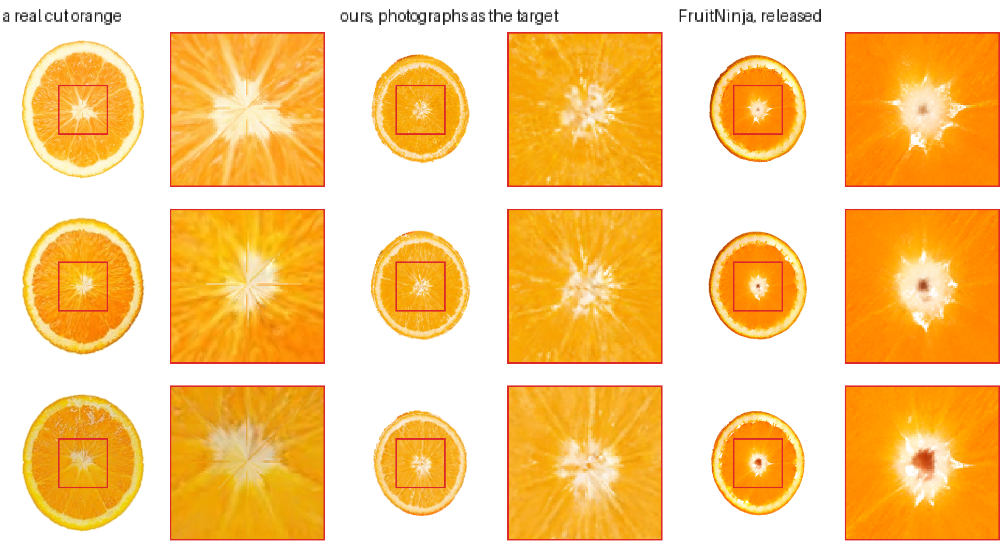
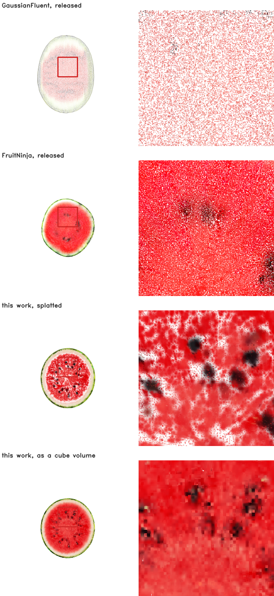

Decoupling Surface and Interior: Explicit Volumetric Occupancy from Unaligned Slices for Exact Planar Cutting
A two-level occupancy lattice supervised by a dozen cross-section photographs of different specimens, with no camera pose and no registration
Preprint
Three planes, eight pieces, drawn apart and back. Each object is a cube volume drawn as the faces of its own cells — no dual grid and no Gaussian anywhere in the picture. The pieces come from connected-component labelling on the lattice, and the colour on every exposed face is read from the volume that was already there.
Abstract
Interactive applications such as virtual cutting, digital dissection and fracture simulation need a 3D representation with an explicit, editable interior — this paper addresses the planar case of that family and states where the formulation stops, and a reconstruction fitted to photographs has a surface and nothing behind it. Existing approaches supply one in two ways, each with a cost. Fine-tuning a diffusion model on an object's own cross-sections and distilling it into the volume requires a training run per object, and the distillation averages the score over timesteps, acting as a low-pass filter that removes the membranes a section consists of. Packing the volume with splats makes one representation serve two roles with opposing optima: a primitive small enough not to blend across material boundaries is smaller than one that covers the volume, and because splats carry no explicit surface, the face a cut exposes is whichever primitives lie near the plane.
We present a decoupled representation that builds an explicit interior directly from sparse, unaligned cross-section photographs, without training or querying any generative model. Volumetric occupancy becomes a compact two-level lattice with one learned feature per cell; the visible exterior is given its own dual-grid surface. Planar cuts are then resolved analytically, as one convex polygon per crossed cell from the plane's intersection with the cell's twelve edges, with topological pieces recovered by connected-component labelling in time linear in the crossed cells. No camera pose is estimated and no reference is registered: the cutting plane is the optimiser's own, each photograph is warped onto the silhouette that plane renders, and because every plane reads the same cells and a cell holds one value, references that disagree are reconciled by the lattice rather than by an alignment step.
Under leave-one-out cross-validation over six references, scored against the photograph its own run never saw, our cut faces reach 0.098 DreamSim against 0.150 for a released model whose generator was fine-tuned on that photograph, ahead on all six folds. Through one appearance-neutral codec the same object is 7.0 MiB against 26.5 and 58.3, and the cut face holds 0.07% unpainted at 2048 px where a splatted baseline reaches 38.7%. Cut-area error against a closed form is first order in the cell size and reaches 0.09% with the plane residual at machine precision, and the piece masses a cut produces match the analytic spherical cap to 0.14% and sum to the whole exactly, giving grid-based physics solvers a direct interface with no intermediate mesh extraction.
| orange unless stated | this work | FruitNinja | GaussianFluent |
|---|---|---|---|
| DreamSim to a held-out photograph ↓ | 0.098 | 0.150 | no orange model released |
| cut face unpainted at 2048 px ↓ | 0.07% | 2.4% | 38.7% |
| watermelon, through one codec ↓ | 7.0 MiB | 58.3 MiB | 26.5 MiB |
| the cut face itself | closed form | whatever lies near the plane | whatever lies near the plane |
| interior supervision | the photographs | a diffusion model fine-tuned on them | generative guidance |
DreamSim is a perceptual distance trained on human forced-choice judgements; the figure is the mean over six leave-one-out folds, each scored against the one photograph its own run never saw, while FruitNinja's generator was fine-tuned on all six. Photographs of the same fruit score 0.042 against each other. Section 4.1.2 gives the other five instruments and states what is in-sample.
1 Introduction
Motivation. Reconstructing an object from photographs yields a hollow shell. Applications that manipulate objects rather than view them — cutting, fracture simulation, surgical rehearsal, digital fabrication — require an explicit interior instead: when a virtual knife passes through an object, what it exposes has to be a coherent internal structure and not empty space.
Limitations of prior work. Two families supply that interior, and each pays for it differently.
- Generative overhead, and a target with no high frequencies. Score distillation averages the diffusion score over timesteps drawn uniformly from its range, which removes exactly the frequencies a cross-section consists of: under either prompt and at any run length the distilled target for an orange is a smooth disc with a single bright centre and no membranes. Prior work restores the structure by fine-tuning the diffusion model on the object's own cross-section photographs [3], which costs a training run per object and produces a model that is not released, so the result cannot be reproduced without repeating the fine-tuning.
- One representation, two roles. Using splatted Gaussians for both a continuous volume and a sharp surface sets the primitive's support \(\sigma\) against the spacing \(h\) in two directions at once. Small \(\rho = \sigma/h\) leaves the volume unpainted — at 2048 px a released section is 38.7% background — and large \(\rho\) blends across material boundaries; we measure both branches over four decades and find no setting that escapes them. And because splats carry no explicit surface, the face a cut exposes is whichever primitives lie near the plane, so its planarity, area and extent are not quantities the method defines.
Our approach: a decoupled volume, supervised by loose references. Building an accurate interior need not require training a generative model, and it need not require a destructive scan of the specimen either. A handful of cross-section photographs is enough — and they may be rough exemplars of related specimens rather than of the object itself. We decouple the hidden volume from surface rendering: the interior becomes a compact two-level occupancy lattice carrying one learned feature per cell, and the visible exterior is given its own dual-grid surface. Section planes are projected through the lattice and the interior features are optimised directly against the 2D references, with no generative model in the loop. The intuition is that the lattice itself is the registration. A photograph is never placed in space; the cutting plane is the optimiser's own and the image is warped onto the silhouette that plane renders, so the only thing two references can disagree about is the content of the cells they share. Occupancy on a single global grid is therefore an implicit regulariser: every plane reads the same cells and a cell holds one value, so discrepancies between non-identical slices resolve to one answer before anything is rendered. Measured on an orange, ten references disagree along the axis they share by more than any one of them varies internally, and the volume removes 57 to 61% of that while keeping 96.5% of the detail those references carry there.
Exact geometry, and a grid a solver can read. Decoupling turns cutting from an undefined slice through particles into a closed-form construction. A planar cut is solved as one convex polygon per crossed cell, obtained by intersecting the plane with the cell's twelve edges: planar to machine epsilon on an oblique off-grid plane, with a cut-area error first order in the cell size reaching 0.09%, and with no edge of the resulting triangulation used by only one triangle, so the face has no gaps. Because occupancy, adjacency and piece identity are integer operations on the lattice, separated fragments are labelled by connected components in time linear in the crossed cells, and the same integers answer collision, so the grid is handed to a material point method without an intervening mesh extraction. Section 3.3.1 states the scope of the planar formulation against mesh, tetrahedral and implicit alternatives, and section 5.2 collects what the scope leaves out.
1.1 Contributions
- A decoupled volumetric representation. Volumetric occupancy (a two-level cube lattice) is separated from exterior appearance (a dual grid), so neither has to serve the other and the coverage-versus-blending trade of volumetric splatting does not have to be positioned on. Through one appearance-neutral codec the same object is 7.0 MiB against 26.5 and 58.3.
- Supervision from loose, unaligned references. An explicit interior is built from sparse 2D cross-section photographs used directly as the target, with no per-object fine-tuning and no score distillation. The references need not agree with each other: the twelve per object are of different specimens at different depths, unregistered, with no known camera. Under leave-one-out over the six transverse references, scored against the photograph its own run never saw, 0.0979 DreamSim against 0.1498 for a released model whose generator was fine-tuned on that photograph — ahead on all six folds, and holding the photograph out costs 0.0044.
- Closed-form planar cutting. A planar cut is computed analytically as edge-plane intersections per cell: planar to machine epsilon on an oblique off-grid plane, cut-area error first order in \(h\) and reaching 0.09%, no edge of the triangulation used by only one triangle, and 0.07% of the face unpainted at 2048 px where a released baseline reaches 38.7%. A splatted interior does not define these quantities, so they cannot be reported for it.
- A partition a solver can be handed. Occupancy, adjacency and piece identity are integer operations, so fragments are labelled by connected components in time linear in the crossed cells and contact resolves to the same integers — closing 2,698 of 610,723 penetrations to zero on the contact slab. Where a cut divides a ball, the piece masses match the analytic spherical cap to 0.14% and sum to the whole exactly, so what a solver is handed is a partition that conserves what it was given — with no marching-cubes step, no tetrahedralisation and no mesh of any kind between the representation and the solver.
2 Related work
2.1 Interior generation from 2D generative priors
Score distillation and what it filters. Optimising a radiance field or a Gaussian set against a pre-trained diffusion model through score distillation [27] averages the score over timesteps drawn uniformly from its range, which acts as a low-pass filter on the target. We measured the consequence for cross-sections: under either prompt and at any run length the distilled target for an orange is a smooth disc with a single bright centre, and the membranes, fibres and seeds that a section consists of are absent. Fine-tuning the diffusion model on the object's own cross-section photographs restores them, and that is what the closest prior work does; the checkpoints involved, here and there, are latent diffusion models [26].
Fine-tuned interior generators. FruitNinja [3] supervises an object's interior with depth-conditioned diffusion on cross-sections and stores it as opaque atomic Gaussians, the diffusion model having first been fine-tuned on photographs of the object being reconstructed. We take the same photographs and make them the target, so the supervision is images of the object rather than a model of images of the object; the interior generator, which is the part that paper contributes, is then not needed at all. What we contribute is what holds the result. The lattice it is quantised onto, and the baseline every number here is measured against, is a Gaussian model quantised as it stands; the representations it descends from are Gaussian splatting [1] and radiance fields [2]. Solid texture synthesis [29] asked the same question before diffusion existed, and InFusion [30] and InnerGS [31] answer it for scenes rather than for objects that are cut.
2.2 Volumetric representations and solid textures
Volumes before primitives. Representing an object by what fills it rather than by what bounds it is older than any of the work above. Direct volume rendering displayed surfaces from sampled volumes without extracting one [56, 57], and volume graphics argued the position explicitly: a voxel model carries interior structure that a boundary model does not have and cannot acquire [58]. The cost was always resolution, and the structures that answered it are the ones this lattice is built from — adaptively sampled distance fields refine only where shape demands it [59], sparse voxel octrees make an empty majority free to store and to traverse [60], and VDB gives a sparse volume dynamic topology and \(O(1)\) random access [61]. What has changed is the supervision available for the contents, not the container: none of that literature had a way to say what the inside of a particular orange looks like, and a photograph of a cut one now does.
Structured Gaussians. Attaching primitives to a structure rather than letting them float is the line this work sits in: anchors on a sparse voxel grid [12], a dense structured cube [13], an octree with level of detail [14], and before them the octree and voxel grids that accelerated radiance fields [15, 16] and the hash encoding that replaced them [17]. What those share is that the structure serves the renderer. Here it serves the volume, and the renderer is given its own representation.
Surface representations for generated 3D. TRELLIS.2's O‑Voxel [10], the surface stage of a structured-latent 3D generator [11], is a field-free sparse voxel surface: a Flexible Dual Grid in which every active voxel carries a dual vertex and grid-edge intersection flags, handling open, non-manifold and fully enclosed internal surfaces. We use its official encoder without reimplementing it, for the cut face and then for the whole exterior.
Dual contouring. The dual vertex is a quadric's minimiser [5], and quadrics are additive over their planes. That is what lets an adaptive grid be built by collapsing, and the collapse's error be read off the same quadric that placed the vertex. Marching cubes [4] is the alternative that places vertices on edges instead, and cannot represent a feature inside a cell; quadric error metrics [8] are where the additivity comes from, and dual marching cubes [6] and feature-sensitive extraction [7] are the two nearest relatives of what is used here.
Sub-pixel primitives and antialiasing. A primitive whose screen-space footprint falls below the sampling rate disintegrates as resolution rises, and the fix is a minimum-scale filter: Mip-Splatting caps the extent at the sampling rate for exactly this reason [53], analytic integration does it differently [54], and the framing that a primitive is a reconstruction filter which must match the sampling rate is older still [55]. The released models we measure carry no such filter. Section 4.1.2's claim is therefore that a cube needs no minimum-scale parameter, not that a Gaussian cannot be given one.
Compressing a Gaussian model. Every storage figure here counts fields at float32 on both sides, which is a file format rather than a representation. The literature that closes that gap is not small: sensitivity-aware vector quantisation [40], learnable masking with residual quantisation [41], spherical-harmonic distillation [42], hash-grid context modelling [43], and putting Gaussians on a grid precisely to make them compressible [44], surveyed in [45]. Reported reductions run from fifteen-fold to seventy-five, and primitive count itself can be cut an order of magnitude at equal quality [46, 47]. We do not run any of them, and section 4.1.1 states what that leaves owed.
What these share is that the structure serves the renderer: a grid, an octree or a hash accelerates or compresses a primitive set whose job is still to be splatted. The conflict this work is about survives all of them, because a kernel wide enough to close volumetric pinholes bleeds across internal materials and a narrow one leaves voids, and a point primitive has no surface for a slice to be defined against. We keep the structured grid and remove the rendering primitive from the interior instead: discrete occupancy with one feature per cell for the volume, and a separate dual-grid boundary for what is seen.
2.3 Virtual cutting and physical simulation
What is old here, and what is not. The machinery of the cut is classical and we would not claim otherwise: clipping a cube by a plane into a three-to-six-sided polygon is textbook, connected components on a grid is textbook, and dual contouring is two decades old. Every one of those was worked out on volumetric data that already existed — a segmented scan, a tetrahedral mesh, a modelled field. What has not existed is that data for an object reconstructed from photographs, and it is the absence rather than the algorithms that has kept these operations away from radiance-field assets. This paper's claim is about supplying it: an occupancy with an interior that a dozen unregistered photographs can specify, on which the classical operations then apply unchanged and exactly. The contribution we would defend is the supervision and what the volume does to it, not a new way to intersect a plane with a cube.
Cutting in medical simulation. Interactive cutting was posed as a problem by surgical simulation long before it was posed for reconstructed assets, and the constraints there are the ones that shaped every later formulation: the cut is arbitrary, it must be resolved at interactive rates, and the object has to remain simulable afterwards [62]. That line is where progressive cutting, element subdivision and the state machines for cutting tetrahedra come from, and it is also where the assumption this work departs from is clearest — those methods begin from a volumetric mesh that a modeller or a scan produced, and a radiance-field asset does not have one.
Cutting a discretisation. Keeping a coarse volumetric discretisation and representing the cut surface analytically inside the cells it crosses is two decades old in graphics: the virtual node algorithm duplicates a cut element so each copy carries one side [48], arbitrary cutting of deformable tetrahedra produces exact polyhedral fragments [49], and extended finite elements formulate the same idea as enrichment [50], with the surgical-simulation line starting earlier [51]. What has not been available before is any of this on a photogrammetric radiance-field asset, because such an asset has no volumetric discretisation to cut. Fracture by continuum damage [52] is the alternative separation mechanism GaussianFluent uses.
Physics on primitives. PhysGaussian [18] simulates Gaussians with MPM, and VR-GS [22] builds an interactive system on that line. We keep the existing particle set and give it piece identity, so subdividing a cut band multiplies leaves and not particles. The solver is MPM [19, 20] in the moving-least-squares form [21], and the surface follows it by the same weighted-sum binding that skinning [24] and embedded deformation [25] use, which is why an affine motion is followed exactly.
Mixed materials and fracture. GaussianFluent [23] is the nearest current work and reaches the same two obstacles from the other side: it densifies an interior with generative guidance and then simulates brittle fracture with a continuum-damage MPM, handling mixed-material objects in one solver. Where it makes the interior denser so that a Gaussian representation can carry it, this work removes the rendering primitive from the interior entirely, so the comparison worth drawing is not which fractures better but what each pays to hold a volume. The material question we reach, whether a shell survives the grid transfer, is one any mixed-material MPM has to answer.
Both lines leave the same gap. Mesh-based cutting needs a volumetric discretisation, which a photogrammetric radiance-field asset does not have; primitive-based cutting has the asset but defines the exposed face by which primitives survive a side test, so its geometry is not something the method states. A two-level lattice has both: a discretisation to cut, and integer occupancy and adjacency that a particle solver reads without an intervening mesh. What this paper establishes about that last point is compatibility rather than accuracy — contact resolves on the same integers, and no dynamics are validated against a reference solver.
2.4 Evaluation
Instruments and their sample sizes. FID [32] and KID [33] against photographs, and CLIPScore [34] for whether the picture reads as the thing. Both distribution metrics are used at sample sizes far below where they are reliable [35, 36], which the results section states rather than works around.
3 Method
3.1 System overview
3.1.1 Problem statement and notation
Let \(\Omega \subset \mathbb{R}^3\) be a closed solid with boundary \(\partial\Omega\), known only through photographs of its exterior. A cuttable representation of \(\Omega\) must support three queries, and we state them first because the rest of this section is their implementation:
| query | signature | |
|---|---|---|
| Q1 | occupancy and material | \(\mathbf{x} \in \mathbb{R}^3 \mapsto (\,[\mathbf{x} \in \Omega],\ \mathbf{f}(\mathbf{x}) \in \mathbb{R}^F\,)\) |
| Q2 | partition under a cut | \(\Pi \mapsto \{\Omega_1 \dots \Omega_K\}\) with \(\bigsqcup_k \Omega_k = \Omega \setminus \Pi\) |
| Q3 | the exposed surface | \(\Pi \mapsto \mathcal{P} \subset \Pi\), the newly visible boundary |
Prior work answers all three from one set of anisotropic Gaussians \(\{(\boldsymbol{\mu}_i, \boldsymbol{\Sigma}_i, \alpha_i, \mathbf{c}_i)\}\): Q1 by asking which primitives lie near \(\mathbf{x}\), Q2 by clustering primitives about \(\Pi\), and Q3 by rendering whatever is near the plane. We answer Q1 and Q2 from a discrete volume and Q3 in closed form, and give appearance its own representation.
The volume. A two-level lattice \(\mathcal{V} = \mathcal{V}_0 \cup \mathcal{V}_1\) of axis-aligned cells, coarse cells at spacing \(h_c\) and fine cells at \(h_f = h_c/2^r\) with \(r\) the refinement factor, each cell \(\mathbf{k}\) carrying a centre \(\mathbf{x_k}\), a level \(\ell(\mathbf{k})\) and a feature \(\mathbf{f_k} \in \mathbb{R}^F\). Occupancy is membership, so Q1 is a floor division and a table lookup and its support is exactly the cell: a cube tiles \(\mathbb{R}^3\), which is the property the rest of the paper rests on.
The boundary. A dual grid \(\mathcal{M} = (\mathcal{N}, \mathcal{E})\) with one node per boundary cell placed at the minimiser of that cell's quadric, and connectivity determined by the occupancy rather than by node positions. Appearance lives here and on \(\mathbf{f_k}\); no rendering primitive is stored in the interior.
The cut. A plane \(\Pi = \{\mathbf{x} : \mathbf{n}\cdot\mathbf{x} + d = 0\}\) partitions \(\mathcal{V}\) by the sign of \(\mathbf{n}\cdot\mathbf{x_k} + d\), which answers Q2 by connected components of face adjacency; and it meets each crossed cell \(c\) in a convex polygon \(\Pi_c\), so Q3 is answered by \(\mathcal{P} = \bigcup_{c} \Pi_c\) with every vertex satisfying the plane equation by construction. The set of crossed cells has size \(K = O(N^{2/3})\) for \(N\) cells, and section 3.3.1 shows the cut costs \(O(K)\) after one preprocess.
Why the labelling is the cheap part here and is not elsewhere. Face adjacency on a lattice is a property of the addresses: two leaves are neighbours when their integer coordinates differ by one in one axis at a common level, which is a table lookup and never a search. Labelling is then a traversal of that graph, linear in the leaves the cut touches, and the answer is exact — a piece is a set of cells and its volume and mass are sums over that set. A splatted representation has no adjacency to traverse. Separating the fragments of a cut point set means clustering it, by a density criterion or by nearest neighbours, at a cost that is superlinear without an index and approximate with one: the parameter that decides how close is connected also decides whether two pieces resting against each other are read as one. The difference is not that our traversal is faster than their clustering. It is that connectivity is given by the representation on one side and inferred from geometry on the other, so on the lattice there is no threshold whose setting could change how many pieces the cut produced.
Sections 3.1 to 3.6 build \(\mathcal{V}\), section 3.3.1 answers Q2 and Q3, section 3.1.4 builds \(\mathcal{M}\), and section 3.1.4 uses \(\mathbf{f_k}\) for material and contact.
3.1.2 Overview
Everything below is one path, and every object takes it. What differs between two objects is a parameter file, never a branch in the code. The figure reads top to bottom in five bands. An object arrives as one of two things (A), reaches the lattice by the route that thing allows (B), and from band C onward there is one structure and no route: the two-level occupancy, its face adjacency and one learned feature per cell. That structure carries two representations (D), the cube hierarchy that answers where material is and the dual grid that draws where it ends, and three families of operation read them (E). Cutting, drawing and physics are separated in the figure because they ask different questions, but they share one property worth stating early: each is decided at the resolution of a cell, so each is wrong in the same place, and each is corrected by stating the geometry exactly where the discretisation cannot. The numbers in parentheses are the equations that define each step.
3.1.3 The two-level lattice
One definition serves the whole page. A cell is an axis-aligned cube; its index at level \(\ell\) is a floor division and its spacing halves with the level,
3.1.4 The boundary as a dual grid
Converting only the cut face would require a second renderer and a per-pixel visibility rule between it and the first; converting the whole boundary removes both. It is also necessary rather than convenient: a Gaussian shell covers only 7 to 20% of the frame at alpha above one half, so at the silhouette a cut face shows through from the side it should be hidden on.
Converting only the cut face and leaving the photographed outside as Gaussians is what makes two renderers, a depth convention and a compositing step necessary. Converting the exterior as well removes the seam instead of managing it. The occupancy already holds the volume, so the exterior is its boundary, every face of an occupied cell whose neighbour is empty, and the same dual-grid encoder that handles the cut face takes the staircase off it.
3.1.5 Adaptive collapse
What follows is Ju et al.'s adaptive dual contouring [5] applied to the Flexible Dual Grid: summing children's quadrics bottom-up and collapsing where the residual is small is their construction, and the additivity that makes it work is Garland and Heckbert's [8]. The only thing new here is expressing the tolerance as a length rather than as a raw residual, which is what makes one \(\tau_c\) comparable across objects and levels.
A dual grid stores one node per active surface voxel, so it costs \(O(A/h^2)\): a plane costs as much as a crumpled sheet of the same extent. That is fixable inside the algorithm, because the dual vertex is already the minimiser of a quadric. For supporting planes \(\{(\mathbf{n}_i, d_i)\}\),
so a quadric is ten numbers. The property everything rests on is that it is additive over the set of planes, \(Q_{\text{parent}} = \sum Q_{\text{child}}\), exactly and with no reference to the mesh the children came from. The grid therefore collapses bottom-up: merge a \(2\times2\times2\) block, add the quadrics, solve \(A\mathbf{x} = \mathbf{b}\), and read the residual \(r = c - \mathbf{b}^\top\mathbf{x}\), the sum of squared distances from that one vertex to every plane the block covers. The tolerance is a length rather than a residual,
The collapse is a constrained optimisation and is worth writing as one. A block of cells carries the planes its children saw; collapsing it replaces their dual vertices with a single \(v^{*}\) placed where those planes agree best, subject to the surface remaining the boundary of the same solid:
The objective is the quadric of equation (12), additive over the planes a block covers, so the sum is ten numbers added per child and the minimiser is one \(3\times3\) solve. The constraint is what keeps a collapse changing the resolution rather than the object: the Euler characteristic and the boundary curve set are held at their uncollapsed values. That is enforced structurally, not by a penalty. A dual grid's connectivity comes from the occupancy and not from where its vertices sit, so a collapse merges vertices and never edges or faces, and a merge is refused when it would identify two vertices the occupancy does not make adjacent, which is the only move that could change \(\chi\). The same fact gives manifoldness where a cut face meets the exterior: both are indexed by the same cells, and the seam is exactly the boundary cells the plane crosses.
3.1.6 Collapse tolerance against surface error
The collapse has one parameter, \(\tau_c\) in equation (14), and what it buys has to be read against what it costs. Sweeping it on the orange's own dual grid gives both at once: the node count that survives, and how far the surface moved to reach it. The distances are to the uncollapsed grid and not to an analytic surface, so this is a self-consistency measure of what the collapse discards rather than a surface-error measure against ground truth; the identity row reproduces the uncollapsed mesh, which is what makes it the reference. All distances are in units of \(h\).
| \(\tau_c\) | nodes | of uniform | node → surface | surface → node | symmetric | 95th | triangles |
|---|---|---|---|---|---|---|---|
| −1 (identity) | 442,253 | 100.0% | 0.000 | 0.000 | 0.000 | 0.000 | 934,520 |
| 0.10 | 315,661 | 71.4% | 0.024 | 0.262 | 0.163 \(h\) | 1.000 | n/a |
| 0.35 | 280,491 | 63.4% | 0.036 | 0.328 | 0.215 | 1.000 | 614,129 |
| 0.50 | 215,304 | 48.7% | 0.072 | 0.468 | 0.338 | 1.209 | 474,742 |
| 1.00 | 149,031 | 33.7% | 0.093 | 0.712 | 0.556 | 1.637 | 326,341 |
The doughnut's 530,958 nodes fall to 197,017 at \(\tau_c = 0.5\) and 143,247 at \(\tau_c = 1.0\). The identity row is the check that the rest means anything: an adaptive dual grid has no uniform mesh to hand back to the library, so the faces are rebuilt by resolving each crossed fine edge's four voxels to the nodes that survived, and with nothing merged that reproduces the library's own mesh to four parts in a million: 934,520 triangles, area 15.22346 against 15.22352, and the same 12,606 boundary and 41,947 non-manifold edges its mesh already has.
3.2 Lattice optimisation from 2D references
3.2.1 Which route an object takes
The two routes are not alternatives to be chosen on preference; each answers a different question about what exists before the pipeline starts.
| what you have | route | why |
|---|---|---|
| A reconstruction of a real object, with an interior already generated into it | Route 1, quantise | The interior exists and is the thing to preserve. Quantisation keeps it and pays only the repair cost of a scan's voids: closing adds 11.7% of cells on the orange and takes the uncut object from 561 components to one. |
| A shape with no reconstruction, or one whose shell thickness matters to a solver | Route 2, generate | The topology comes from a field, so it is solid by construction (closing adds 0.1%) and the skin band \(\beta_s\) is an argument rather than a consequence of where a reconstruction put its primitives. This is the only route under which \(\tau_s\) can be built for. |
| Either | it does not matter | Cutting, the surface conversion, the physics and the material field read occupancy, adjacency and one feature per cell, and cannot tell which route produced them. |
Route 2 additionally needs six views to paint the skin. Where those come from is a separate question from what the route does with them: of the objects here only one had no reconstruction to begin with, and for the other two the field and the views are derived from the released model, so those two demonstrate that the route reaches the same lattice rather than that it can do without a scan.
3.2.2 Solidity of a quantised occupancy
Route 1 reaches the lattice by quantisation. Every primitive of the source model is sent to the cell that contains it, and the set of cells that received at least one is the occupancy,
The half-cell offset in equation (1) is written with \(h_f\), which is what makes equation (3)'s parent relation hold with one shared origin. Two scripts offset by \(\tfrac12 h_c\) instead when they only ever index at the coarse level, where either choice puts a cell centre in the middle of its own cell; the measurements are unaffected and the inconsistency is noted here rather than left for a reader to find. \(h_f = h_1\) throughout, the fine spacing, and \(h_c = h_0\) the coarse one; the pipeline figure writes them \(h_e\) and \(h_0\).
With the origin \(\mathbf{o}\) of equation (1) offset by half a cell. The offset is not cosmetic. A generated lattice puts its cells at \((\mathbf{k} + \tfrac{1}{2})h\), so flooring from the minimum rather than from half a cell below it lands every cell centre exactly on a cell boundary and lets floating point decide the side: measured on these lattices it loses 49% of the cells.
A quantised occupancy is not solid. Photographs see a surface, so the cells behind it were never occupied by anything and \(\mathcal{O}\) has interior voids. Closing removes the gaps between neighbouring shells and a flood fill from outside removes the rest — the same pairing that robust repair of polygonal models uses to decide inside from outside without trusting the input's connectivity [9] —
where \(B\) is the one-cell structuring element and \(\mathcal{C}_{\partial}\) is the component of the complement that reaches the bounding box. What is left is inside by construction rather than by a threshold. The count of connected components is the read-out.
| object | coarse cells | pieces before | pieces after |
|---|---|---|---|
| doughnut | 517,166 → 522,753 (+1.1%) | 1 | 1 |
| orange | 759,353 → 848,021 (+11.7%) | 561 | 1 |
| watermelon | 553,043 → 561,805 (+1.6%) | 1 | 1 |
A sponge falls into many connected components and a solid into one, so the component count of the uncut object is a direct read-out of whether the occupancy is solid, and it says these are holes rather than fragments. A piece count means nothing until this has run, so the cutting code runs it rather than assuming it.
3.2.3 Populating the lattice
Everything after this section is shared. An object reaches the same two-level lattice by one of two paths, and which one it took is not recoverable downstream: cutting, the surface conversion, the physics and the material field all read a lattice and none of them asks where it came from. The two paths are how the lattice gets populated rather than the claim being made; section 4.1 measures the independence and section 4.1 the claims that rest on the lattice itself.
Each of its steps replaces an inference with something exact.
| step | what it does | what it replaces |
|---|---|---|
| topology | cells inside a signed-distance field, at two spacings | quantising a reconstruction, then repairing the holes it left |
| normals | the gradient of that same field | the direction from the centroid, or a smoothed occupancy gradient |
| six views | renders of the source model, cropped to the silhouette | images generated by diffusion, one per face |
| skinning | projection through the camera that made each view, blended by incidence | a saturating map from a cell's direction to a reference radius |
What the route needs is a field and six views, and where those come from is a separate question from what the route does with them. Of the three objects here only the doughnut had no reconstruction to begin with; for the orange and the watermelon the field and the six views are derived from the released model, so those two demonstrate that the route reaches the same lattice and not that it can do without a scan. The limitations state what that leaves unproven.
Route 2 does not quantise anything. The topology comes from a signed-distance field \(\phi\) evaluated at the cell centres, and the same field gives the normal and the skin band, whose width \(\beta\) is an argument rather than a consequence of where a reconstruction put its primitives,
Colour reaches the skin cells by projection, by the standard construction: incidence-weighted blending of registered views is view-dependent texture mapping [37, 38], and iterative six-view projective texturing of a generated shape is what TEXTure [28] does with diffusion images. What differs here is only the source of the views.
In detail: Each of the six views \(I_i\) has the camera \(\pi_i\) that rendered it and a direction \(\mathbf{d}_i\), so a skin cell is looked up in every view that sees it and the views are averaged by how squarely each faces the cell,
Nothing here is inferred. The camera is known because it produced the view, so there is no saturating map from a cell's direction to a reference radius and no rim light to correct for.
Solid by construction is the first payoff. A cell is inside when the field says so, so there is no scan to recover, no radius to infer and no closing to repair: closing the generated occupancy adds 0.1% of its cells against 11.7% for the quantised orange, and the uncut object is one piece rather than 561.


3.2.4 Interior supervision from unaligned references
The supervision is one reference image per training plane, and the reference is a photograph: the transverse family draws from six photographs of transverse cuts, the longitudinal family from six of longitudinal cuts, each resized and fitted to the silhouette its plane renders. No generative model runs. This is a departure from the work we build on, which generates each reference from a diffusion model fine-tuned on those same photographs, and the margin in section 4.1 is therefore attributable to the target as much as to the lattice — which is why that section compares against released models and does not present the substitution as controlled.
What is optimised and what is not. The objection to supervising from photographs with no camera is that the slice pose is unknown, so it must either be recovered or the gradient cannot be formed. Neither happens here, and it is worth writing down which symbols are variables. The optimisation is over the per-cell features \(\mathcal{F} = \{\mathbf{f}_i\}\) and the shared decoder \(\theta\), and over nothing else:
There is no plane pose \(P_j = [\,R_j \mid \mathbf{t}_j\,]\) among the parameters and no gradient flows to \(\Pi_j\), because \(\Pi_j\) is not an estimate of where a photograph was taken. It is a plane the trainer chooses. The operator \(\mathcal{R}\) is not a projection of the photograph into the volume; it is a rendering of the volume at that plane — select the cells on one side by the sign of \(\mathbf{n}_j \cdot \mathbf{x}_i + d_j\), decode their features, and rasterise, giving an image and an alpha \(\alpha_j\). The photograph enters last, through \(\Phi\), which resizes and pastes it inside \(\alpha_j\). The direction of the whole construction is volume → image, and the photograph is compared against the result, so an unknown pose has nothing to be unknown about: no term in the objective depends on where the photograph was taken, and there is no correspondence to get wrong.
One consequence worth stating because reviewers have assumed the opposite: there is no total-variation term on the interior features, and none is needed for the argument. Smoothing neighbouring cells toward each other would reconcile disagreeing references by blurring them, which is the failure this paper measured elsewhere — reconciling two targets by averaging along their intersection cost 0.012 DreamSim against a control, forty times the run-to-run spread, because averaging destroys exactly the discrete features that distinguish a seed from its surroundings. What reconciles the references is that a cell has one value and every plane reads it, not a penalty that makes neighbouring cells agree. The only total-variation term anywhere in the system acts on the physics head, where the quantity really is expected to be piecewise smooth.
The supervision, stated. Let \(\mathcal{R} = \{\mathbf{I}_k\}_{k=1}^{M}\) be the reference images, \(M = 12\), split into a transverse and a longitudinal family. A training plane \(\Pi_j = (\mathbf{n}_j, d_j)\) is rendered by keeping the cells on one side and rasterising them through the shared decoder \(g_\theta\), giving an image \(\hat{\mathbf{C}}_j\) and an alpha \(\alpha_j\); the target is a reference fitted to that alpha, \(\mathbf{T}_j = \Phi(\mathbf{I}_{k(j)}, \alpha_j)\). The objective is a structural and a photometric term over \(N_c\) random crops of side \(w\), with a per-crop band statistic:
with \(w = 128\), \(N_c = 6\) and \(\lambda_{\mathrm{b}} = 0.3\) in every run reported here. Three things are absent and their absence is the point: no score, no diffusion model and no term that measures a rendered plane against another rendered plane. DreamSim appears nowhere in the objective, because it is the instrument the results are read with.
Is this averaging, and does it cost the texture? The objection to reconciling unaligned references on a shared lattice is that a cell receiving two demands must resolve them by averaging, and that averaging is a low-pass filter which destroys the very structure the references were supplying. It is the right question and it has four measurable parts.
How much of the volume is actually in conflict. The objection assumes the references overlap. Two planes of one family are parallel and share nothing; two planes of different families meet in a line, so what they share is one-dimensional inside a three-dimensional volume. On the orange's 877,494 cells, with 24 transverse and 10 longitudinal training planes, 33.8% of cells are touched by at least one plane and 2.9% by two or more. Averaging, where it happens at all, happens on three per cent of the volume, and on that three per cent the two references genuinely describe the same material, so a single answer is the correct output and not a compromise.
Whether what survives is structure or its mean. Measured on the axis the ten longitudinal references share, the model removes 57 to 61% of their disagreement while retaining 96.5% of the variation they carry along that line. A low-pass filter cannot do both. The disagreement between references falls and the detail within them does not.
What explicit averaging does, for contrast. We implemented the averaging version and report it because it failed: reconciling each pair of targets by replacing both with their mean along their intersection cost 0.012 DreamSim against an otherwise identical control, forty times the spread between two runs of one configuration. A seed averaged with no seed is a smudge. That the lattice's reconciliation does not behave this way is evidence that it is not performing the same operation.
Whether the result is a texture of revolution. A related objection is that supervising from cross-sections without poses can only produce a field that is a function of radius and height — radial infilling rather than an object. That is testable on the trained model alone. Bin its cells by \((r, z)\) about the object's axis and compare each cell against its bin's mean: a texture of revolution is reconstructed by the bin means and leaves nothing behind. A synthetic control that really is a function of \((r, z)\) leaves a residual of 5% of its own spread under this binning, which is the floor of the statistic. The trained orange leaves 79%. Four fifths of its variation is structure that radius and height cannot account for. The direction is also informative: the source lattice leaves 53%, so training did not make the interior more symmetric but less — the part \((r, z)\) cannot explain is preserved in absolute terms, 0.0625 to 0.0635, while the part it can explain shrinks.
Whether the lattice is simply under-fitting. If the capacity were too low to hold what twelve images ask for, the cells the planes touch would absorb the supervision and the rest would keep whatever initialisation gave them. They do not. Comparing the trained model against the lattice it started from, the mean colour change is 0.0905 on cells a plane touches and 0.0915 on the 580,510 cells no plane ever touches — indistinguishable. The supervision reaches the whole volume, and it reaches it through the shared decoder rather than through per-cell fitting, which is what makes twelve images enough for eight hundred thousand cells. The per-cell feature carries where a cell sits in that decoded space; the decoder carries what the object is made of.
There is no pose to recover. The obvious objection to supervising from photographs with no camera and no known depth is that the slice projection cannot be aligned. It does not have to be, because the alignment never runs in that direction. The plane \(\Pi_j\) is ours: it is sampled by the trainer, the lattice is rendered through it, and the resulting silhouette \(\alpha_j\) is a known quantity. The photograph is then warped onto that silhouette by \(\Phi\). At no point does anything estimate where a photograph was taken, and no photograph contributes geometry — it contributes the appearance the plane's own geometry will carry. A misregistered reference is therefore not a geometric error to be corrected but a different claim about what the interior looks like there, which is the quantity section 3.2.4's table measures and the volume resolves.
Two consequences follow. Deformation between specimens cannot produce ghosting in the usual sense, because nothing is being superimposed: each plane has one target, the target is fitted to that plane, and doubled structure would require two references to be applied to one plane. What misalignment does produce is disagreement between planes about the cells they share, which is resolved by the cells holding one value each and is measured as such. And the failure mode that remains is angular rather than positional: a reference rotated relative to the family puts its radial structure at an angle the others do not share, which is why the transverse family is phase aligned, and an ablation that injects rotations deliberately is the way to find where that breaks.
What absorbs the misalignment. A reference is not a picture of this object at this plane, so three things stand between it and a pixel loss. \(\Phi\) fits it to the silhouette the plane actually renders, so the object's own geometry supplies the registration and none is asked of the photographer. For the transverse family the images are first rotated to a common angular phase, because an orange's segment walls run the length of the fruit and every transverse cut meets the same ones: the angular profile of one section correlates \(+0.448\) with the next depth, \(+0.077\) six depths away, and \(+0.034\) between two different oranges, so the phase is the part that should be shared and everything localised is not. And the loss is read on crops through SSIM and a band statistic rather than globally pixel by pixel, which scores whether a crop has the right local structure rather than whether it lines up.
What the photographs do not do is agree with each other in three dimensions, and this section is about why that is acceptable. It is the property that decides what a user has to supply. A pipeline whose supervision must be mutually consistent needs registered views of one specimen; this one asks only for images of what the inside of such an object looks like, and the twelve used here are of different fruits, cut at different depths, photographed on different days, none of them taken with any of the others in mind. Each was taken of a different specimen at a different depth, and none was taken with any of the others in mind. Ten vertical training planes all contain the object's axis, so that axis is the same line in all ten references, and each photograph was taken without reference to the other nine. Whatever each shows there, it shows independently of the other nine, so the references make ten different claims about one line.That inconsistency is measurable and it is not small. Taking the axis column of each reference, restricted to rows where every section has material, and comparing the references pairwise:
| mean absolute disagreement on the shared axis | the references | our renders | removed |
|---|---|---|---|
| orange, route 1 | 0.1118 | 0.0436 | 61.0% |
| orange, route 2 | 0.1130 | 0.0490 | 56.7% |
| orange, route 2 repeat | 0.1137 | 0.0485 | 57.4% |
| watermelon, route 1 | 0.0171 | 0.0183 | −7.2% |
| watermelon, route 2 | 0.0142 | 0.0185 | −30.0% |
On the orange the references disagree with each other about the same line by 0.113, while a single section varies along that line by 0.091: the conflict between the references is larger than the structure inside one of them. A representation cannot satisfy all ten, and it should not, because at most one of them can be right. What it can do is choose once, and that is what happens here: both sections read the same cells through the same decoder, so the volume is a constraint the supervision is projected onto rather than a canvas it is painted on, and 57 to 61% of the disagreement is gone from the renders.
On the watermelon the references already agree, at 0.014, because a melon's core is uniform where an orange's is segmented and there is little for independent samples to differ about. There the volume adds a small amount of disagreement rather than removing it, 0.001 to 0.004 in absolute terms. We report both directions: the reconciliation is worth what there was to reconcile.
The reconciliation is not paid for with structure, which is the check that decides whether it is worth anything. Taking the same axis band and measuring how much each image varies along the line — the row-to-row change that a membrane or a seed is — the model retains 96.5% of what the references carry there. It is not agreeing by flattening; it is agreeing on one answer and keeping the detail that answer has.
What this buys is a weaker requirement on the input than a reconstruction pipeline usually imposes. The twelve images are not views of one scene: nothing registers them, no camera pose is known or recovered, no two of them show the same fruit, and any consistency they have is coincidence. They are asked only to be plausible pictures of what such an interior looks like. The volume is what makes that sufficient, because every plane reads the same cells and a cell has one value, so ten contradictory claims about a line resolve to one before anything is rendered. In practice the input is: cut a few of the fruit, photograph the faces, and supply them.
Stated as a limitation, the same property says the interior this produces is a plausible interior of that kind of object rather than the interior of the particular specimen scanned, and nothing here recovers the latter.
This is a property of holding the interior as a volume at all, and it is measured here rather than assumed. It also locates where a better supervision would act. The volume currently resolves the conflict after the fact, by averaging ten answers into one field; the conflict itself is produced upstream, by generating each cross-section independently. A supervision that conditioned each new section on what the volume already holds along its intersections with the sections already drawn would remove the conflict at its source instead. That is not what this paper does, and the measurement above is what says it is worth doing.
3.3 Closed-form planar cutting operator
3.3.1 The exposed face, in closed form
A cut arrives as a plane. Cells it crosses are subdivided until \(h_\ell \le h_{\text{target}}\), leaves are joined to their face neighbours, edges the plane separates are dropped, and connected components are the pieces. Written out: a leaf takes the sign of the plane at its centre, an adjacency survives when its two leaves agree, and a piece is a class of the equivalence relation that generates,
A cut here is an unbounded plane, and that is a property of the representation rather than of the implementation. A piece is an equivalence class of face adjacency under a global sign code, one sign per plane, so the cut has no extent: an incision that enters, travels and stops has no expression, because it would need the same pair of cells severed inside the incision's footprint and adjacent beyond its end. A curved cut approximated by \(Q\) planes generates up to \(2^Q\) sign regions and shatters the object rather than cutting along a curve. Peeling, tearing and freehand surgical cutting are therefore outside this formulation. The construction that extends to them is known and fits this lattice almost unchanged: duplicate the crossed cell rather than the geometry and let each copy carry one side of an analytic cut surface [48], which is the virtual node algorithm, with the MPM counterpart carrying the discontinuity as two velocity fields either side of a crack. It is worth separating which half of the construction a curved cut breaks, because they are not equally hard. The face survives: a smooth cut surface is planar to first order over a cell, so at cell scale the same twelve-edge intersection applies to the local tangent plane, and the band refinement of section 3.3.2 is already the mechanism for making the cell small relative to the local radius of curvature — the cost is more leaves in the band, not a different algorithm, and no mesh-versus-mesh intersection appears. What breaks is the labelling: piece identity here is a global sign code over the whole cut, and a surface that is not a single separating manifold has no such code. Extending to curved and terminating cuts is therefore a question about how a cell records that it is severed, not about how a face is computed, which is why the virtual-node construction is the one to reach for. We have not implemented it and report no numbers for it.
Placing that against the alternatives is worth doing explicitly, because the formulations differ in what they can express and not only in how fast they are. The rows below are what each representation supports in principle, from the constructions cited above rather than from anything measured here; only the last row is this work.
| representation | planar cut | curved cut | incision that stops | after the cut |
|---|---|---|---|---|
| triangle mesh, boolean | exact, on robust predicates | exact | exact | may need remeshing; slivers |
| tetrahedra, virtual node [48] or XFEM [50] | exact fragments | exact | exact | elements duplicated, no remesh |
| implicit SDF | exact zero set | exact if the tool is a field | needs a bounded tool field | re-extraction to display |
| splatted primitives [3, 23] | side test; no face defined | side test | no expression | nothing to redo, and no face either |
| this work | closed form per cell | face survives, labelling does not | no expression | nothing to redo |
The scope this work occupies is therefore narrower than a tetrahedral cutting formulation and wider than a splatted one, and it is chosen rather than inherited: a photogrammetric asset has no volumetric discretisation for the tetrahedral constructions to act on, which is the gap this representation fills, and the planarity restriction is the price of labelling pieces by a global sign code instead of by per-element bookkeeping. A method that needs freehand incisions should use virtual nodes on a tetrahedral mesh and pay for the mesh; a method that needs a cut face it can make statements about, on an asset that began as photographs, has not previously had an option.
Two degeneracies have to be handled for the closed-form face to be stable, and both are handled by construction rather than by a tolerance. When the plane passes exactly through a cell vertex, the edge parameter of equation (10) evaluates to 0 or 1 on the two edges meeting there and the same point is emitted twice; the merge that follows collapses vertices within \(10^{-6}h\), so the duplicate disappears and the polygon loses a degenerate edge rather than gaining a zero-area triangle. When the plane is coplanar with a cell face, every edge of that face has \(\mathbf{n}\cdot(\mathbf{b}-\mathbf{a}) = 0\) and no intersection is emitted at all: the face is not a crossing, both cells on either side take a definite sign from equation (8), and the cut runs along the boundary already between them. Neither case needs an epsilon on the plane distance, because the sign that decides membership is evaluated at cell centres, which a plane through a vertex or along a face never touches.
Written as an algorithm, with \(\mathcal{C}\) the coarse occupancy, \(\Pi\) the plane and \(K = |\{c : c \cap \Pi \neq \emptyset\}|\) the number of crossed cells:
precompute once per object E0 ← adjacency(C) O(N log N)
cut(C, E0, Π, htarget)
1 B ← { c ∈ C : |n·xc + d| ≤ ½h Σa|na| } crossed cells, eq. (9) O(N)*
2 L ← refine(B) until hℓ ≤ htarget; L ← L ∪ (C \ B) leaves O(K)
3 E ← { (u,v) ∈ E0 : u,v unrefined } ∪ adjacency(L|B∪∂B) reuse outside the band O(K)
4 q(ℓ) ← sgn(n·xℓ + d) for ℓ ∈ L side, eq. (8) O(K)
5 E' ← { (u,v) ∈ E : q(u) = q(v) } drop the crossings O(|E|)
6 P ← connected_components(L, E') pieces, eq. (9) O(|E| α)
7 for c ∈ B do Πc ← Poly(c ∩ Π) by eq. (10) the cut face O(K)
8 return P, 𝒫 = ∪c∈B Πc
Step 7 is the geometry the whole construction exists for. For a crossed cell \(c\) with vertices \(V_c\) and edges \(E_c\), the face is the intersection of a convex body with a half-space boundary, so it is a convex polygon and it is the convex hull of the plane's crossings of the cell's twelve edges,
and the cut surface of the whole object is their union, \(\mathcal{P} = \bigcup_{c \in \mathcal{B}} \Pi_c\). Every vertex of \(\Pi_c\) satisfies \(\mathbf{n}\cdot\mathbf{x} + d = 0\) by construction rather than by fitting, so \(\mathcal{P}\) is planar to whatever the arithmetic leaves and carries no approximation term. Ordering the crossings by angle about their centroid in the plane's own basis gives the polygon; three to six crossings occur for a cube, and the two degenerate cases are handled as described below. The polygons meet edge to edge because every crossed cell is refined to the same depth, so \(\mathcal{P}\) is a manifold with boundary wherever the occupancy is.
3.3.2 Adaptive refinement of the cut band
Refining every crossed cell to a fixed depth spends the deepest level any cell needed on all of them, and what varies across a band is not depth but how badly a leaf is misclassified. A leaf is handed whole to one side of the plane, so its error is everything on the other sides,
with \(H_k\) the half-spaces the planes cut \(c\) into. Refining while \(e\) exceeds a tolerance turns the level from a depth into a ceiling. The criterion has to be cheaper than what it saves, and for a plane it is closed form: clipping a cube by a half-space is an inclusion-exclusion over the corners, so \(e\) is evaluated for every cell in the band at once with no hull and no tetrahedra. Checked against a convex hull on 300 random cubes and planes, the closed form agrees to 2.4e−12 of a cell.
This is the ablation the design asks for, on a ball cut by an oblique plane, comparing uniform refinement to adaptive refinement at matched error:
| ball, oblique plane | uniform, leaves | adaptive, leaves | fewer | error | pieces |
|---|---|---|---|---|---|
| one level | 11,359 | 9,014 | 20.6% | equal to 0.3% | 2 / 2 |
| two levels | 27,858 | 18,786 | 32.6% | identical | 2 / 2 |
| three levels | 93,980 | 60,324 | 35.8% | identical | 2 / 2 |
And on the orange's own lattice, 894,304 solid cells cut by an oblique off-grid plane:
| orange | leaves | misclassified volume | fewer |
|---|---|---|---|
| uniform to \(h_c/4\) | 1,380,146 | 0.001079 | |
| adaptive, tolerance 0.02 | 1,165,855 | 0.001079 | 15.5% |
| adaptive, tolerance 0.05 | 1,020,402 | 0.001510 | 26.1% |
| adaptive, tolerance 0.2 | 937,389 | 0.002169 | 32.1% |
The saving is not free and its shape says why. It comes entirely from cells the plane clips unevenly, so an oblique plane through a curved object gives 15 to 36% and an axis-aligned plane gives nothing at all: every cell it crosses is bisected equally, the error is the same in all of them, and there is no variation for a tolerance to exploit. We measured 0.0% on an axis-aligned ball and on a dumbbell, and report it because a criterion that adapts to nothing is worth knowing about before it is trusted.
3.4 Discrete topology and fragment labelling
3.4.1 The cost of a cut, and adjacency as arithmetic
A cut costs what it touches. Refinement is already local, and so is the rest of it, because a plane changes face adjacency only where it refines: a pair of unrefined leaves is adjacent after the cut exactly when it was adjacent before. So the object's own adjacency is computed once and every cut reuses the pairs whose ends it did not touch, recomputing only the pairs with a refined leaf on either end. That set is the band, which is \(O(N^{2/3})\) of the volume and measures 4.0 to 10.7% of the cells on the objects here, so the cut is linear in the crossed cells \(K\) rather than in the object \(N\). Labelling is then connected components on the surviving graph.
| one cut on the orange, 894,304 solid cells | seconds |
|---|---|
| labelling as an interpreted union-find, adjacency over every leaf | 13.76 |
| labelling vectorised | 5.24 |
| adjacency reused outside the band | 2.91 |
| the object's own adjacency, once, reused by every later cut | 5.00 |
The three rows produce the same 991,436 leaves, the same 2,925,520 surviving edges and the same two pieces; only the work differs. Checked on every synthetic case above as well, where the band-local result matches the full pass in piece count and edge count exactly. What remains at 2.91 s is the refinement itself and the component pass, not the adjacency.
Equation (9) is the standard box-plane separating-axis test [39], and it is used twice. A cell of side \(h\) centred at \(\mathbf{x}\) is cut by the plane exactly when its centre lies within half the cell's diagonal extent along \(\mathbf{n}\), which is the right-hand side; that decides which cells are refined. It also bounds how far a point inside a cell can be from the plane, which is what section 4.2.4 uses to explain why occupancy alone claims material on both sides of a cut and why one sign test removes exactly that band and nothing else.
Adjacency is arithmetic too. A leaf's neighbour is at its own level or coarser (were it finer, the finer leaves on the shared face would find this one), so the coarser candidate is the neighbour's coordinate shifted right, which is floor division and therefore the cell containing it. With \(Q\) planes a leaf carries a side code, the \(Q\) signs at its centre, and adjacency survives only between equal codes.
Topology is voxel-approximate by construction; the visible face must not be, or it reads as a staircase. Per cut leaf we intersect the plane with the twelve edges, order the points around their centroid in the plane's own basis, and fan them: a convex polygon of three to six vertices lying on the plane. The residual is what the arithmetic leaves: measured on an axis-aligned plane through the origin it is 0.00e+00 exactly, which is that plane's own accident, and for an oblique plane it is the rounding of \(\mathbf{a} + t(\mathbf{b}-\mathbf{a})\), a small multiple of the machine epsilon. The claim worth making is not the size of that number but that there is no other error term: no primitive is asked to approximate the plane, so the only departure in a cut is the voxelisation of the silhouette. Every crossed cell is refined to the same depth, so cut polygons meet edge to edge and there are no T-junctions between them.
3.5 Direct grid interfacing for simulation
What this section establishes is that the lattice answers the questions a solver asks, in the form it asks them. It does not establish that the resulting dynamics are accurate: no comparison against a reference solver, no deformation or stress error, and no contact timing is reported here or anywhere in this paper. The limitations state that plainly, and the claims below should be read as claims about representation compatibility.
The O-Voxel patch is the visible boundary and takes no part in the physics; the cube hierarchy is the physical volume and answers every question about where material is. Piece identity is a relabelling and not a resampling. The existing particle set stays as it is, and each particle takes the piece of the leaf it falls in, so subdividing a cut band multiplies leaves and not particles. Collision is a floor division and an occupancy test, with one more of each when the coarse cell was refined.
\(q_P \in \{+1, -1\}\) is the side of the plane piece \(P\) lies on, taken as the sign that the majority of its leaves carry under equation (8); \(\operatorname{leaf}(\mathbf{x})\) is the leaf containing \(\mathbf{x}\), found by the floor division of equation (4). The sign test is applied only to points inside the band of equation (9), which is where a leaf can straddle the plane at all; a point further from the plane than half a leaf's diagonal extent is inside or outside on the strength of its leaf alone. That restriction is what makes the at-rest result below a consequence rather than a coincidence, and applying the test unconditionally would be a different and stricter collision model.
Near the cut the voxel test claims material up to half a leaf past where the cut is, because a leaf the plane passes through is occupied as a whole. One comparison fixes it: the point must be on the piece's own side of \(\Pi\). Measured on the current models, two freshly separated halves report material inside each other from occupancy alone; with the plane test, none of them do.
Material comes off the same feature. The decoder's per-cell feature is clustered into \(K\) classes, and each class is given a stiffness by an ordering rather than a fit: a class that lies mostly in the skin band is peel whatever its colour, since the shell term dominates; among interior classes the paler one is the structural tissue, pith or albedo or crust, and ranks stiffer. The ordering rather than the absolute value is the claim,
where \(\beta_j\) is the fraction of class \(j\)'s cells in the skin band, \(L_j\) its mean luminance, \(\mathcal{R}\) the rank normalised to \([0, 1]\), and \(E_{\min} = 10^5\), \(E_{\max} = 5\times10^6\) the ends of the range the ordering is mapped onto. The weights 0.65 and 0.35 are fixed rather than fitted; what is claimed is the ordering they produce, not the values. Each piece then carries a per-particle stiffness field instead of one modulus, and the solver runs once per piece.
Whether the solver can see any of that is a separate question, and it is decided before the first step is taken. MPM carries material through a background grid of spacing \(\Delta x\), and a feature thinner than about two grid cells is averaged away in the transfer. So the number that governs a hard shell is the shell's thickness in the solver's own units,
The percentile in (15) is over the shell cells \(\mathbf{k} \in \mathcal{S}\).
where \(L\) is the object's own extent, because the solver normalises the object into its grid box and a world length only reaches \(\Delta x\) through that scaling.
\(\text{grid\_lim}\) and \(n_{\text{grid}}\) are the solver's box size and grid resolution. The condition for a stiffness contrast to survive is \(\tau_s \gtrsim 2\): MPM carries material through one background grid, and a feature thinner than about two of its cells is averaged into its surroundings by the particle-to-grid and grid-to-particle transfers. We take that threshold from standard MPM practice rather than deriving it, and section 4.2 tests it rather than assuming it. Route 2 makes \(\tau_s\) something to solve for: \(t_{\text{shell}} \approx \beta h_f\), so the band width that reaches a given \(\tau_s\) is \(\beta \ge 2 L \Delta x / h_f\). Section 4.2 measures \(\tau_s\) on the existing objects, builds a lattice at the predicted \(\beta\), and reports what the solver does on either side of the threshold.
A cut face and the exterior surface meet at a seam, and the two are produced by different constructions: the face is the planar polygon of equation (10) and the exterior is the dual grid of equation (13). They are joined rather than blended. Both are indexed by the same cells, so the seam is exactly the set of boundary cells the plane crosses, and each contributes one polygon and one dual vertex whose positions already agree to within the cell. The normal is deliberately discontinuous across it: a cut is a crease in the object, and smoothing the normal across the seam would round an edge that physically exists. What is made continuous is colour, because a cell's feature is decoded once and read by both sides, so a face and the rind beside it take their colour from the same cell rather than from two representations that have to be matched. The residual seam artefact is therefore geometric quantisation of the silhouette, which section 4.3.1 measures, and not a shading discontinuity.
A rigid transform per piece is correct only while nothing bends. Each surface vertex is bound to its own piece's \(k\) nearest particles with weights fixed at bind time,
The weights are a smooth kernel over the \(k\) nearest particles, whose support is the \(k\)-th distance itself, so a vertex in a dense region binds tightly and one in a sparse region reaches further without a length scale being chosen anywhere,
\(\varepsilon = 10^{-12}\), which only keeps the outermost weight from being exactly zero. Because the weights sum to one and are fixed at bind time, any affine motion of the particles is followed exactly: substituting \(\mathbf{x}_j(t) = \mathbf{A}\mathbf{x}_j(0) + \mathbf{b}\) into (18) gives \(\mathbf{x}_v(t) = \mathbf{A}\mathbf{x}_v(0) + \mathbf{b}\), which is why the residual below is a statement about bending and not about drift.
4 Experiments
The validation is organised along four axes, and it is worth saying at the outset which of them this paper fills and which it does not. Perceptual fidelity under loose, unaligned references is section 4.1, and it is the axis the paper's main claim rests on. Geometric precision of the cut face — planarity, area error, unpainted fraction, absence of gaps — is sections 4.1.2 and 4.3.1. Storage and runtime is section 4.3, and it contains a result in each direction: contact queries run at 4.9 million per second, and a cut takes seconds rather than milliseconds. Physics is section 4.2, and it is the axis that is not filled: contact is measured and a resolvability criterion is derived and swept, but there is no comparison against a reference solver, no deformation or stress error, no fracture — which this formulation does not implement at all — and no interactive frame rate. A reader looking for a physics benchmark will not find one here, and the limitations say so in the same words.
Everything below is a comparison, and every comparison has a picture. The organising axis is the two routes, a lattice quantised from a scan and a lattice generated from a field and skinned from six views, because after the second step nothing downstream can tell which was taken, so any result that separates them is a result about how an object is reached rather than about what happens to it afterwards. Objects are chosen by whether a released model of a prior method exists for them, so that every comparison is against a published result rather than a reimplementation. Where a comparison comes out against this work it is reported in the same place as the ones that do not. Comparisons against other work sit on the same footing with one exception, stated in section 4.1: route 1 quantises a released model, and the released watermelon's interior came from a fine-tuned checkpoint, so that lattice inherits one.
| the comparison | what it answers | its figure |
|---|---|---|
| route 1 against route 2 | cost of a generated topology | held-out cuts, transverse and longitudinal |
| the six views against the shell they made | projection accuracy | three per-object sheets |
| this work against FruitNinja and GaussianFluent | cost of holding a hidden volume | the same slab, four ways |
| this work against FruitNinja's released models | the cut a viewer actually sees | the same held-out planes, five rows |
| occupancy alone against occupancy and the cut plane | whether contact is real | the contact slab at four separations |
| with photographs against without | dependence on object-specific supervision | the same cuts, both ways |
| the cube renderer against the rasteriser | representation against renderer | the same cuts, four columns |
| uniform material against a field | solver-resolvable shell thickness | the section by class and by stiffness |
4.1 Comparison with prior work
Two published methods fill an object's interior with Gaussian primitives so that a cut reveals something: FruitNinja [3], which supervises the interior with depth-conditioned diffusion, and GaussianFluent [23], which densifies it under generative guidance and then simulates fracture. They are compared here on four things: what the interior costs to hold, what it looks like on terms none of the three methods chose, what a held-out cut scores through one evaluator, and what each method depends on. The last is the axis. FruitNinja's published interiors come from a diffusion model fine-tuned on the object's own photographs, and that model is not released; GaussianFluent needs no fine-tuned model, and neither does this work, so the reproduction anyone can perform is the one without it.
4.1.1 The same object, from the same source file
FruitNinja's released watermelon is redistributed by GaussianFluent [23]: the same 541,266,069 bytes and the same MD5 as the model route 1 quantises. The two representations can therefore be compared on the same object, from the same source file.
| watermelon | FruitNinja, as released | this work, route 1 | |
|---|---|---|---|
| primitives / cells | 7,959,789 | 1,741,169 | 4.6× fewer |
| as stored, cells only, index implicit | 425.1 MiB | 56.5 MiB | 7.5× less |
| with the sparse index the lattice needs | 425.1 MiB | 76.4 MiB | 5.6× less |
| with the dual-grid exterior as well | 425.1 MiB | 163.5 MiB | 2.6× less |
| opacity | 1.0000 at the median and the 10th percentile | n/a | opaque by construction |
| support scale \(\sigma\) | 1.11e−7 | n/a | |
| spacing \(h\) | 0.0036 | 0.0172 | |
| \(\rho = \sigma/h\) | 3.1e−5 | 0.26 as splatted; n/a as a cube volume | |
| primitives per unit volume | 1,029,854 | 137,000 |
4.1.2 The cut face
Two claims are made here and the second is the one a viewer cares about. The first is that a cut face drawn from a cube volume can be stated; the second is that it looks more like the fruit. The second is the stronger result and it survives the strictest comparison in the paper, so it goes first.
The comparison turns on what the supervision is. Both methods are given the same asset — photographs of the fruit's cross-sections, six of each family. FruitNinja spends them on a fine-tuning run, obtaining a depth-conditioned diffusion model specific to that fruit, and distils that model into the interior; the model is not released, so reproducing their result means reproducing the fine-tuning. We use the images as the target directly. Nothing is trained that is not the object itself, nothing generative runs in the loop, and the comparison below is therefore not between two amounts of supervision but between two ways of spending the same six photographs.
Holding out the photograph, not just the plane. The objection to supervising a volume with six images is that the volume may simply be storing them. Held-out planes do not answer it: a plane the training never used still cuts a fruit whose every reference the training did. So the reference is held out instead. Six models are trained, each on five of the six transverse photographs and five of the six longitudinal, and each is scored against the one transverse photograph its own run never saw. FruitNinja's released model is scored against the same held-out photograph in the same batch, without retraining anything — its interior already exists, and the diffusion model that produced it was fine-tuned on all six, the held-out one included. The comparison is therefore tilted against us: on every fold, ours is the only model that has not seen the image it is being measured against.
| orange, transverse DreamSim ↓, held-out plane and held-out photograph | ours, that photograph held out | FruitNinja, released, fine-tuned on it | ours, trained on all six |
|---|---|---|---|
| fold 0 | 0.0990 | 0.1734 | 0.1041 |
| fold 1 | 0.1109 | 0.1422 | 0.1094 |
| fold 2 | 0.0844 | 0.1350 | 0.0823 |
| fold 3 | 0.1041 | 0.1729 | 0.0948 |
| fold 4 | 0.0830 | 0.1424 | 0.0765 |
| fold 5 | 0.1061 | 0.1326 | 0.0942 |
| mean ± sd | 0.0979 ± 0.0106 | 0.1498 ± 0.0165 | 0.0936 |
The paired metrics on the same folds. A specification asks for PSNR, SSIM and LPIPS before it asks for anything else, so they are here, computed on the same six folds against the same held-out photograph.
| orange, mean over six leave-one-out folds | PSNR ↑ | SSIM ↑ | LPIPS ↓ | DreamSim ↓ |
|---|---|---|---|---|
| this work | 14.11 dB | 0.7498 | 0.4525 | 0.0979 |
| FruitNinja, released | 13.60 dB | 0.7472 | 0.4919 | 0.1498 |
All four agree in direction, and the size of each margin follows from what each instrument compares. PSNR and SSIM are pixel-aligned comparisons, and a held-out cutting plane is not a photograph of any particular slice: there is no correspondence between a plane at an arbitrary depth and an image of a different fruit cut somewhere else, so what these measure is largely that both models produce an orange disc of about the right size and colour. Fourteen decibels is what two photographs of different oranges score against each other, so the scale here is set by the protocol rather than by either method. LPIPS compares features rather than pixels and separates the two by more; DreamSim, trained on human choices between image pairs, separates them by most and is the instrument this paper reads.
Two things follow, and the second is the one the objection was about. The first is the margin: 1.53 times closer to a photograph our model was not allowed to fit and theirs was, winning on all six folds individually and by more than the fold-to-fold spread of either column. The second is the third column. Holding the photograph out costs 0.0044 of DreamSim — 0.0979 against 0.0936, on the same references and the same procedure, the only difference being whether the run had seen the image. That is less than half the spread across folds, and the gap it has to explain is 0.052. A representation that was storing its references would not behave this way: removing one of six references from a memoriser costs it that reference, and here it costs 8% of a margin. The six images are being used to learn the fruit rather than to reproduce the six images.

| orange, transverse FID ↓, 100 held-out cuts, every row out-of-sample | |
|---|---|
| FruitNinja, released model, supervised by a diffusion model fine-tuned on this fruit | 102.2 |
| this work, route 1, supervised by the photographs directly | 90.1 |
| this work, route 2, supervised by the photographs directly | 73.2 |
| the photographs against each other | 46.3 |
Twenty-nine points of FID closer to the photographs than a method whose interiors were generated by a model fine-tuned on those photographs, on supervision that is those photographs used directly. The planes are held out; the reference images are not, on either side — ours are the training target and the baseline's fine-tuned its model — so the comparison is between two ways of spending the same six images and not between one method that has seen them and one that has not, and the leave-one-out study above has already removed it from our side alone.
And it does not survive every instrument, which has to be said in the same breath. FID at six references is dominated by its own bias, so we scored the same renders three ways:
| orange, transverse, out-of-sample rows only | DreamSim ↓ | FID ↓ | KID ↓ | CLIP‑I ↑ | CLIP‑T ↑ | prec / rec |
|---|---|---|---|---|---|---|
| FruitNinja, released model | 0.1326 | 102.2 | 171±27 | 97.64 | 24.64 | 0.00 / 0.00 |
| FruitNinja, stock checkpoint | 0.2697 | 378.7 | 667±103 | 90.89 | 25.13 | 0.00 / 0.00 |
| this work, route 1, photographs as the target | 0.0744 | 90.1 | 136±27 | 96.92 | 23.24 | 0.00 / 0.00 |
| this work, route 2, photographs as the target | 0.0794 | 73.2 | 107±33 | 96.92 | 24.28 | 0.00 / 0.00 |
| the photographs against each other | 0.0424 | 46.3 | n/a | 98.48 | 24.62 | 1.00 / 0.33 |
Six references will not support a distribution, so rather than argue about FID we scored the same renders with every instrument that seemed defensible and report all of them. Four are informative and two are not.
DreamSim is the one to read. It is a perceptual distance trained on human two-alternative forced choice judgements, which is precisely the judgement "does this cut face look more real" asks for, and unlike the others it was built for that rather than repurposed. On this object it puts this work at 0.0744 and 0.0794 against the released model's 0.1326, roughly 1.7× closer to the photographs and about halfway between that model and the photographs' own agreement with each other at 0.0424. FID and KID order the arms the same way, by 29 points and by about one and a half combined standard deviations.
Run on every object and every arm, it says the same thing each time, and on the watermelon it reverses the one result that had gone against this work:
| DreamSim to the nearest photograph ↓ | orange | watermelon | doughnut |
|---|---|---|---|
| the photographs against each other | 0.0424 | 0.0670 | one reference |
| this work, route 2 | 0.0794 | 0.1674 | 0.1145 |
| this work, route 1 | 0.0759 | 0.1750 | 0.1178 |
| this work, route 2, photographs as the target | 0.0794 | not run | not run |
| FruitNinja, released | 0.1326 | 0.2211 | no released model |
| GaussianFluent, released | no orange released | 0.3278 | no released model |
| FruitNinja, stock checkpoint | 0.2697 | not run | not run |
Both objects, both baselines, the same direction. On the watermelon this work is 1.3× closer to the photographs than FruitNinja and 2.0× closer than GaussianFluent, which is the model that took the best FID on that object. The two instruments rank it differently. GaussianFluent's watermelon is a different specimen whose seeds are elongated along one direction and whose pith reads thicker than in the photographs, features a distribution over sections is less sensitive to than a paired perceptual distance is.
The doughnut gets an appearance number here for the first time. It has one reference photograph per family, which is why every distribution metric in this paper skips it and why its only previous score was a topological check that a featureless grey torus would also pass. A pairwise perceptual distance needs one reference, so the object the paper leans on for non-convex topology and for the whole physics section is no longer unmeasured on appearance.
Against that, CLIP image similarity puts FruitNinja 0.72 of a point ahead on a scale where every candidate and the references themselves fall between 96.9 and 98.5, so it is discriminating inside two percent of its range. CLIP against a text prompt ranks the stock-checkpoint arm highest of all, the one with brown flesh and crusted segment walls, which is the clearest available demonstration that it does not measure what is in dispute. And improved precision and recall cannot be estimated at all here: with six references the manifold radii are smaller than the gap between any render and any photograph, so every arm reads 0.00 and the metric returns no information rather than a low score. We report it because we ran it.
So: three instruments favour this work, one of them the one built for human judgement; one favours the baseline marginally on a compressed scale; one is at its ceiling; one is unestimable. That is not a proof, and a two-alternative forced choice against the photographs would settle it properly, which the limitations list as owed. It is enough to say that a lattice supervised without any photograph of the object produces a cut face at least as believable as a pipeline whose interiors came from a diffusion model fine-tuned on exactly those photographs, and by the human-aligned measure, more so.
The instrument matters on the watermelon and the two disagree. On FID this work is level with FruitNinja at 180.9 against 182.0 and behind GaussianFluent's 170.2; on DreamSim it is ahead of both, 0.167 against 0.221 and 0.328. We read the perceptual pairing as the answer and give the reason in section 4.1.2 above. The orange's photograph-supervised rows are in-sample and are not a comparison at all.
The rest of this section is the first claim, and the result goes first there too. A cut face drawn from a cube volume stays closed at every resolution; a cut face drawn from splatted primitives comes apart as the viewer looks closer. At 2048 px, which is the scale at which somebody actually inspects a cut, GaussianFluent's section is 38.73% background and FruitNinja's is 2.37%, while the same lattice drawn as a volume is 0.07%. That is a factor of 550 against one baseline and 34 against the other, and it is not a tuning result: a cell's support is the cell, so a pixel either falls inside an occupied one or it does not, at any zoom, with nothing to set.
The structural claim underneath it is stronger than the numbers. A splatted interior does not define a cut face explicitly. It has the primitives that lie near the plane, so the surface a viewer sees is a rendering artefact of their density and support, and no statement can be made about it: not that it is planar, not what its area is, not where its boundary lies. Here the face is the convex polygon of equation (10), one per crossed cell, and the statements follow by construction. Every vertex satisfies the plane equation to machine epsilon on an oblique off-grid plane, and the area error against a closed form falls from 0.97% to 0.09% as the lattice refines, so the only error in a cut is the voxelised silhouette and it is first order in \(h\). Neither baseline can be measured on that axis at all, which is the difference this paper is about.
The rest of this section is the evidence, in the order it was gathered.
What each primitive covers
Storage says what each costs, not what each produced. Every method has its own frame, scale and renderer, so a comparison of the interiors routes through none of them: for each model, the plane through its own centroid, the primitives within a slab of half-width 1% of its own extent, so 2% thick, projected orthographically, normalised by its own projected radius, opaque and nearest-first, which all three are, at median and tenth-percentile opacity 1.0000.

Through each method's own renderer, at one size
Measured on the images each method's own rasteriser produced, over the same hundred held-out transverse cuts at 512 px. At this size the released models are close, which is why a single image size settles nothing:
| unpainted inside the section, own rasteriser, 100 cuts | watermelon | orange |
|---|---|---|
| FruitNinja, released model | 0.21% | 0.90% |
| FruitNinja, stock checkpoint | not run | 11.40% |
| GaussianFluent, released model | 0.10% | no orange released |
| this work, route 1 | 0.17% | 0.18% |
| this work, route 2 | 0.00% | 0.01% |
The one row that is not under a percent is the stock-checkpoint reproduction, at 11.40%, and it is a result rather than an embarrassment: without the fine-tuned model the supervision leaves the interior sparse as well as brown, so the same collapse shows in coverage and in FID.
Two things qualify that table. Every row in it, ours included, is a Gaussian render: a route-2 cell carries fourteen numbers and is splatted like any other primitive, at a median \(\rho\) of 0.26, which the sweep below shows is inside the window where a Gaussian set pays little for coverage. So this is not yet a comparison between a cube and a Gaussian: at this image size every row is a Gaussian render inside the window where a Gaussian set pays little for coverage, and no claim about a cube's support can rest on it.
And over resolution, which is where it separates
A coverage number at one pixel count says nothing. Swept over resolution, on the watermelon, six transverse cuts per cell, with the cube volume rendered by cube lookup rather than by splatting and with supersampling off, so that every row is one sample per pixel. That last point is not incidental: the cube march defaults to two-by-two supersampling, and measuring it that way against Gaussian rows that get one sample gives the cube four times the sample density at the resolution where the argument is made. With supersampling on it reads 0.02 / 0.05 / 0.06% instead of the figures below, which is a small difference and would have been an unfair one. The row above is a hundred cuts at 512 px and these are six at each of three sizes; they are separate experiments and the counts are given so they are not read as one:
| unpainted inside the section, watermelon | 256 px | 1024 px | 2048 px |
|---|---|---|---|
| FruitNinja, released model (3DGS) | 0.13% | 0.39% | 2.37% |
| GaussianFluent, released model (3DGS) | 0.05% | 2.03% | 38.73% |
| this work, route 2, splatted (3DGS) | 0.00% | 0.45% | 3.32% |
| this work, route 2, as a cube volume | 0.04% | 0.07% | 0.07% |

This is the result stated at the top, now with its measurement. Coverage from a splatted representation is resolution-dependent for every model including ours: at 256 px they are all under two tenths of a percent and indistinguishable, and by 2048 px GaussianFluent's section is 39% background (32.9 to 49.5 across the six cuts), FruitNinja's 2.4% (1.5 to 3.4) and our own splatted lattice's 3.3% (2.5 to 3.8), against the cube volume's 0.07% (0.06 to 0.09). The cube volume does not move, 0.02% to 0.06% over three octaves, because a cell's support is the cell and a pixel either falls inside an occupied one or does not. What a Gaussian buys with enough primitives at a chosen zoom, a cube has by construction at every zoom, and that follows from what a cell is rather than from a number that happened to come out well. It is measured on one object at three image sizes, on six cuts each, and the other two objects and the intervening sizes are not run.
| watermelon | FruitNinja | GaussianFluent | this work, route 1 | route 2 |
|---|---|---|---|---|
| primitives / cells | 7,959,789 | 1,381,100 | 1,741,169 | 1,065,856 |
| stored, cells only | 425.1 MiB | 310.8 MiB | 56.5 MiB | 34.6 MiB |
| stored, with the sparse index and the exterior surface | 425.1 MiB | 310.8 MiB | 163.5 MiB | 62.6 MiB |
| higher-band SH coefficients | 0 | 45 (76% of its bytes) | 0 | 0 |
| stored at spherical-harmonic degree 0, matched fields | 425.1 MiB | 73.8 MiB | 163.5 MiB | 62.6 MiB |
| support \(\sigma\) / cell \(h\) | 1.11e−7 | 1.35e−9 | 0.0172 | 0.0172 |
| that, against one pixel in the slab figure | 47,053× smaller | 5,067,762× smaller | 3.3 pixels across | 3.3 pixels |
| primitives in the slab | 256,696 | 57,289 | 51,763 | 34,587 |
| unpainted at each primitive's own footprint (what a primitive covers, not what a renderer draws: it charges a Gaussian its \(\sigma\) and credits a cell its \(h\), and our cells carry Gaussians at \(\sigma \approx 0.26h\)) | 20.5% | 46.7% | 5.7% | 6.1% |
| unpainted, own rasteriser, 512 px | 0.21% | 0.10% | 0.17% | 0.00% |
| unpainted, own rasteriser, 2048 px | 2.37% | 38.73% | not run | 3.32% |
| the same lattice as a cube volume, 2048 px | n/a | n/a | not run | 0.07% |
4.1.2.1 Then enlarge the Gaussians: what \(\rho\) actually costs
| \(\rho = \sigma/h\) | orange | watermelon | doughnut | |||
|---|---|---|---|---|---|---|
| holes | blending | holes | blending | holes | blending | |
| 0.0001 | 44.7% | −0.09 | 16.5% | −0.07 | 44.4% | −0.02 |
| 0.01 | 44.4% | −0.09 | 16.3% | −0.07 | 44.2% | −0.02 |
| 0.05 | 37.1% | −0.10 | 11.8% | −0.06 | 38.7% | −0.02 |
| 0.10 | 17.5% | −0.09 | 2.6% | −0.05 | n/a | n/a |
| 0.25 | 0.0% | +0.005 | 0.0% | +0.020 | 0.0% | −0.009 |
| 0.50 | 0.0% | +0.028 | 0.0% | +0.045 | 0.0% | +0.011 |
| 1.00 | 0.0% | +0.107 | 0.0% | +0.072 | 0.0% | +0.030 |
| 1.50 | 0.0% | +0.198 | 0.0% | +0.089 | n/a | n/a |
| 2.00 | 0.0% | +0.226 | 0.0% | +0.097 | 0.0% | +0.074 |
| 3.00 | 0.0% | +0.197 | 0.0% | +0.105 | n/a | n/a |
Both trade-offs this work avoids by construction, drawn from the tables above and in section 3.1.6. a: on a fixed primitive set, support below \(\rho \approx 0.1\) leaves the section unpainted and support above 0.25 blends across material boundaries, with a narrow window between them; both published models sit at the far left. b: the dual grid trades node count against surface error monotonically, so a point on that curve is chosen rather than found. A cube's occupancy has neither knob: its support is its cell.
So the answer to "just make them bigger" is: on a fixed primitive set it works, within a window you have to find, and it is not what the published models do. FruitNinja sits at \(\rho = 3\times10^{-5}\), four orders of magnitude to the left of that window, and GaussianFluent's \(\sigma\) is two orders smaller again, though its own nearest-neighbour spacing is not published so no \(\rho\) can be formed for it here, where the table says 16 to 45% of a section is unpainted for a primitive set of this size. Their renders are not full of holes because they buy coverage the other way, with 7,959,789 and 1,381,100 primitives against this lattice's 1,741,169 quantised and 1,065,856 generated. The sweep above is on the orange's 877,494, which is a lattice of one particular size; whether an 8-million-primitive set at \(\rho = 0.25\) blends or merely covers is the same experiment on their primitive sets and is not run here. That is the trade this paper is actually about, and it is a trade about count rather than about support: a cube's support is its cell, so it covers exactly, at any resolution, with no window to find and no parameter to set.
4.1.2.2 And under compression
Counting fields at float32 measures a file format rather than a representation, and the obvious objection is that a codec would close the gap. It does not. Every arm below goes through the same appearance-neutral pipeline: constant fields dropped, unobservable fields dropped, positions quantised to sixteen bits of the model's own extent, log-scales and colours to eight, and the result entropy-coded field by field. For the lattice the cell coordinates are Morton-ordered and delta-coded first, which is the octree compaction a structured representation is open to and a free point cloud is not.
| watermelon | as counted | same codec, compressed | ratio |
|---|---|---|---|
| FruitNinja, released | 425.1 MiB | 58.3 MiB | 7.3× |
| GaussianFluent, released | 310.8 MiB | 26.5 MiB | 11.7× |
| this work, route 1 | 76.4 MiB | 11.6 MiB | 6.6× |
| this work, route 2 | 46.8 MiB | 7.0 MiB | 6.6× |
The Gaussian models compress harder, which is expected and is the objection stated properly: FruitNinja's opacity has a single value across all 7,959,789 primitives, and its median anisotropy is 1.06, so the quaternion describes the orientation of a sphere. Removing what carries no information takes 425.1 MiB to 58.3 before any entropy coding does its part. The lattice has less of that redundancy to give up and still ends smaller: 3.8× smaller than GaussianFluent and 8.3× smaller than FruitNinja after every arm has been compressed the same way. The lattice figure is also an upper bound, because the per-cell feature is substituted here by white noise of the same shape, which is the least compressible object of that size; a learned feature can only do better.
4.1.3 How much misalignment the references may carry
The claim that references need not be registered invites the obvious question of how far that goes. Each reference is rotated by an angle drawn uniformly from \(\pm\sigma\), independently per plane and fixed across the run, and everything else is held. A rotation is the failure that matters here rather than a translation: the fit already places a reference inside the silhouette its plane renders, so a displaced photograph is put back, while a rotated one puts radial structure at an angle the rest of the family does not share.
| rotation injected into every reference | DreamSim ↓ | against control |
|---|---|---|
| none (control) | 0.0738 | — |
| ±5° | 0.0798 | +8% |
| ±15° | 0.0803 | +9% |
| ±30° | 0.0850 | +15% |
| FruitNinja, released, no injected noise | 0.1326 | +80% |
The curve is nearly flat to fifteen degrees and costs fifteen per cent at thirty, which is a third of a right angle; at every setting the result stays well ahead of a fine-tuned baseline that had no noise injected at all. Two mechanisms produce that and they should not be conflated. The first is the transverse family's phase alignment, which rotates each reference to the family's common angular phase and therefore undoes part of an injected rotation before the loss sees it — this is why five and fifteen degrees are indistinguishable. The second is the lattice, which resolves what alignment leaves. What the table measures is the system's tolerance, not the lattice's alone, and an object whose sections have no shared angular phase to align to would not get the first mechanism.
4.1.4 Both methods through the same evaluator
objects/orange.conf sets REF_H=secref_orraw_hsep and
EVAL_REF=secref_orraw_hsep, the same directory, so the two photograph-supervised arms
were fitted to the six images they are then scored against. The no-photograph arm, FruitNinja's
released model and the stock-checkpoint reproduction were not. The 46.3 reference-against-itself
floor is computed on those same targets. Every orange number below is therefore in-sample for two
of five rows and out-of-sample for three, and the ordering must not be read as a comparison. The
watermelon does not have this problem: its training reference is secref_wm_h1 and its
evaluation set is data_finetune_images/watermelon/, which are disjoint. That asymmetry
is the mechanism behind a result the earlier text called a puzzle, that every arm here beats
FruitNinja on the orange and does not on the watermelon.| orange, 100 cuts per family | transverse FID ↓ | transverse KID ↓ | longitudinal FID ↓ | longitudinal KID ↓ | PSNR ↑ | SSIM ↑ | LPIPS ↓ |
|---|---|---|---|---|---|---|---|
| FruitNinja, released model (fine-tuned on this fruit) | 102.2 | 171±27 | 269.6 | 383±90 | 15.25 | 0.7561 | 0.4575 |
| FruitNinja's pipeline, stock checkpoint (our reproduction) | 378.7 | 667±103 | 511.6 | 825±79 | 13.09 | 0.6461 | 0.4619 |
| this work, route 1 | 91.5 | 142±21 | 222.8 | 275±96 | 16.13 | 0.7650 | 0.4070 |
| this work, route 2 | 74.1 | 101±21 | 286.8 | 382±102 | 16.43 | 0.7560 | 0.4048 |
| this work, no fine-tuning | 90.1 | 136±27 | 213.5 | 298±111 | 16.07 | 0.7632 | 0.4080 |
| the photographs against each other | 46.3 | n/a | 70.2 | n/a | 21.24 | 0.8047 | 0.1815 |
| watermelon, 100 cuts per family | transverse FID ↓ | transverse KID ↓ | longitudinal FID ↓ | longitudinal KID ↓ | PSNR ↑ | SSIM ↑ | LPIPS ↓ |
|---|---|---|---|---|---|---|---|
| FruitNinja, released model (fine-tuned on this fruit) | 182.0 | 223±15 | 211.0 | 244±19 | 11.32 | 0.7383 | 0.4651 |
| GaussianFluent, released model (its own watermelon) | 170.2 | 151±10 | 177.5 | 187±18 | 11.61 | 0.7119 | 0.4838 |
| this work, route 1 | 183.5 | 240±12 | 236.7 | 285±30 | 11.46 | 0.7308 | 0.4625 |
| this work, route 2 | 180.9 | 229±14 | 262.8 | 342±38 | 11.51 | 0.7302 | 0.4594 |
| the photographs against each other | 60.4 | n/a | 69.9 | n/a | 17.59 | 0.6290 | 0.2927 |
On the orange every arm of this work is ahead of FruitNinja's released model on every column, and two of those arms were fitted to the photographs they are scored against, so that ordering is not a comparison. The two rows that can be compared with FruitNinja's are the no-photograph arm at 90.1 and the stock-checkpoint reproduction at 378.7, both out-of-sample like FruitNinja's 102.2. That narrower comparison is the one we would defend on this object.
On the watermelon the answer goes the other way and should be stated plainly: GaussianFluent's released model scores best, 170.2 and 177.5 against our 180.9 and 236.7 and FruitNinja's 182.0 and 211.0. It is a different watermelon from the one photographed, its cameras were chosen by us, and its upright axis is the best of three we tried while every other row is a single draw, so it is a minimum over configurations against single draws and not a like-for-like win. It is still the best FID in the table and nothing here is served by hiding that. On cost the honest reading is narrower than this paper first claimed. GaussianFluent's file is 310.8 MiB, but 76% of that is degree-1-to-3 spherical harmonics, a view-dependent capability this representation does not have at all. Charged the same fields, at degree 0, its 1,381,100 primitives cost 73.8 MiB against this work's 62.6 and route 1's 163.5. So against GaussianFluent the storage advantage is 1.18× for route 2 and a 2.6× disadvantage for route 1, and the five-fold figure was an accounting of somebody else's spherical harmonics. What does not change is that at 2048 px its own rasteriser leaves 38.7% of its section unpainted where the same lattice drawn as a cube volume leaves 0.07%. The claim this work makes is about what a representation can state about a cut face and what it costs to hold a volume, not about winning a distribution metric at 100 samples against a reference set that scores 60.4 against itself.
These FID values are not the ones in the six-cut table above, which scores six cuts rather than a hundred; the two tables are internally consistent and should not be read across.


4.1.5 The comparison in one table
Each cell is measured by the section named, on the watermelon unless the row says otherwise, or marked where the quantity does not exist for that representation. A cut-face residual and a cut-area error need a cut-face construction to measure; a splatted interior draws whatever primitives lie near the plane and has none, which is the difference this paper is about and not a number it can report on their behalf.
| dimension | FruitNinja | GaussianFluent | this work | § |
|---|---|---|---|---|
| primitives or cells | 7,959,789 | 1,381,100 | 1,065,856 | 4.2.1 |
| stored, all a method needs | 425.1 MiB | 310.8 MiB | 62.6 MiB | 4.2.1 |
| stored, same codec | 58.3 MiB | 26.5 MiB | 7.0 MiB | 4.2.2.2 |
| unpainted at 512 px, own renderer | 0.21% | 0.10% | 0.00% | 4.2.2 |
| unpainted at 2048 px | 2.37% | 38.73% | 0.07% as a volume | 4.2.2 |
| cut-face plane residual | no cut-face construction | no cut-face construction | machine ε | 4.5.2 |
| cut-area error against a closed form | not measurable without one | not measurable without one | 0.97% → 0.09%, first order in \(h\) | 4.5.2 |
| DreamSim to the photographs, watermelon (0.067 between photographs) | 0.221 | 0.328 | 0.167 | 4.2.2 |
| DreamSim to the photographs, orange (0.042 between photographs) | 0.133 | no orange released | 0.076 | 4.2.2 |
| transverse FID, 100 held-out cuts, watermelon | 182.0 | 170.2 | 180.9 | 4.2.4 |
| view-dependent appearance | none | 45 SH bands | none | 4.2.1 |
| slicing and piece labelling | not addressed | damage field | \(O(K)\) in crossed cells, 2.9 s | 4.5.1 |
The view-dependence row is a bound rather than a measurement, and it is the one honest way to read the storage column. The decoder here takes a cell's feature and returns a colour; it takes no view direction, so a wet cut face, a specular rind and a translucent flesh are outside what this representation can express, not degraded versions of them. Nothing in this paper measures appearance under moving illumination for that reason. The storage advantage is therefore partly a capability difference: we do not pay for view-dependent appearance because we do not provide it, and a fair reading of the compressed row is 7.0 MiB for a Lambertian volume against 26.5 MiB for one that also carries a third-order angular field.
4.2 Materials, collision and a shell the solver can resolve
The lattice answers three physical questions with the same structure it uses to answer geometric ones: which material a cell holds, whether two pieces are touching, and whether a stiffness contrast survives the solver's grid transfer. They belong together because they share a failure mode. Each is decided at the resolution of a cell, so each is wrong in the same place, the band where the cut or the shell is thinner than the cell that represents it, and each is fixed by the same move: state the geometry exactly where the discretisation cannot.
4.2.1 Shell thickness in solver grid cells
A material field can change the simulated dynamics and still fail to produce a hard shell around a soft interior, because MPM transfers through one background grid and a shell one to three cells thick does not survive that transfer. That failure has a number, and the number can be worked out before any simulation runs. MPM moves particle quantities to a background grid of spacing \(dx\) and back, so a feature thinner than about two grid cells is averaged with its neighbours on the way through and comes back as the average. The quantity that decides whether a hard shell is possible is therefore the shell's thickness in MPM grid cells, and it had never been measured:
| object | shell thickness | in fine cells | in MPM grid cells | a stiffness contrast is |
|---|---|---|---|---|
| orange | 0.01910 | 3.2 | 2.00 | exactly at the threshold |
| watermelon | 0.02571 | 3.0 | 1.25 | not resolvable, needs 4.8 cells |
| doughnut | 0.01234 | 3.0 | 0.87 | not resolvable, needs 6.8 cells |
4.2.2 Shell thickness as a parameter of route 2
That threshold is what route 2 can act on. It builds the lattice from a field, so the skin band \(\beta\) is a number passed to the builder rather than a property of someone else's model. The prediction above says the doughnut needs about seven fine cells. Building it at four settings:
| \(\beta\), fine cells | cells | measured thickness | in MPM grid cells | |
|---|---|---|---|---|
| 3 (the default) | 1,129,008 | 4.1 | 1.17 | no |
| 5 | 1,486,904 | 5.5 | 1.57 | no |
| 7 | 1,827,832 (+62%) | 7.2 | 2.06 | yes |
| 9 | 2,148,936 (+90%) | 9.0 | 2.59 | yes |
4.2.3 Solver response across the threshold
The arithmetic says a shell under two grid cells cannot hold a stiffness contrast. Simulating both settings says whether that is what happens. The object falls under its own weight with the material field applied, and the solver reports each body's extent along the gravity axis as a fraction of its rest extent, separately for the cells the field called skin and the ones it called interior. A hard shell keeps its own extent and lets the interior lose more, so the sign of the gap between them is the question, not its size.
| doughnut, at deepest compression | shell, in grid cells | skin extent | interior extent | interior − skin |
|---|---|---|---|---|
| \(\beta = 3\), falling | 1.17 | 0.9220 | 0.9259 | +0.0040 |
| \(\beta = 7\), falling | 2.06 | 0.9334 | 0.9318 | −0.0016 |
| \(\beta = 3\), falling and cut | 1.17 | 0.9264 | 0.9333 | +0.0070 |
| \(\beta = 7\), falling and cut | 2.06 | 0.9280 | 0.9177 | −0.0103 |
Two confounds are not controlled. The same preset makes the skin lighter than the interior, 750 against 950 in density, so an extent measured under gravity is being pushed by a density contrast in the opposite direction to the stiffness one and the paper cannot separate them. And the \(\beta = 7\) build is not the \(\beta = 3\) build with a thicker skin: it has 62% more cells and a much larger skin fraction, so at 8.0e6 in the shell the whole body is stiffer, and both extents rise between the two settings, which is the signature of a stiffer object rather than of a resolved shell. The control that separates these is the uniform preset at both \(\beta\), which the material code ships for exactly this purpose. It has now been run, with the level labels present so that the same per-level extent is recorded, and only the stiffness made uniform.
| doughnut, extent gap (interior − skin) at the last frame | \(\beta = 3\) | \(\beta = 7\) |
|---|---|---|
| uniform stiffness, labels present | +0.0630 | +0.0628 |
| the material field applied | +0.0288 | +0.0515 |
| difference the field makes | −0.0342 | −0.0113 |
The control does what a control should: it shows that the geometry alone produces a gap, that the gap is the same at both band widths to within a thousandth, and therefore that a raw gap is not evidence about a shell. Against that baseline the material field does move the result, so the field is reaching the solver. But it moves it more at \(\beta = 3\) than at \(\beta = 7\), which is the opposite ordering to the one a shell becoming resolvable would produce, and it is consistent with the \(\tau_s\) values above: on the grid the solver integrates, neither build is near the threshold, so there is no reason to expect the thicker band to behave differently in kind. We report this as a negative result. The band width is a parameter route 2 can set, the criterion for choosing it is stated and computable, and the experiment intended to confirm the criterion does not confirm it.
The four gaps are 0.16%, 0.40%, 0.70% and 1.03% of the object's extent, so the effect is a fraction of a percent at three of the four settings and reaches 1% at one. Each cell is a single deterministic run: there is no repeat, no seed variation and therefore no noise floor to compare the sign flip against. It is detectable in the solver's report and not in a render. What it establishes is that the diagnosis predicted a threshold and that crossing it reverses the sign of the response, on one object. Whether a contrast large enough to look like a peel needs a thicker shell again, a finer solver grid or a different transfer is not answered here.
4.2.4 How the cut divides mass
A solver's dynamics are the solver's. What the lattice is answerable for is what it hands over: which material went to which piece and how much of it, and that has a closed form on a ball. A plane at signed distance \(t\) from the centre of a ball of radius \(R\) cuts a cap of volume \(\pi (R-t)^2 (2R+t)/3\); the lattice's answer is the leaves labelled to that side times their own volume. Both sides are compared at four offsets and three spacings, on the same oblique off-grid plane used elsewhere.
| ball radius in cells | \(t/R = 0\) | 0.25 | 0.50 | 0.75 | pieces sum to the whole |
|---|---|---|---|---|---|
| 16 | 0.47% | 0.52% | 0.65% | 0.98% | 0.000% |
| 24 | 0.22% | 0.18% | 0.29% | 0.65% | 0.000% |
| 32 | 0.14% | 0.14% | 0.14% | 0.47% | 0.000% |
Two readings. The error against the analytic cap falls with the spacing and is worst for the thinnest cap, which is where a discretisation has least material to be right about — the same first-order behaviour the cut-area error shows, and for the same reason. Conservation is not approximate: the pieces sum to the whole to zero, at every offset and every spacing, because a leaf is handed to one side and only one and no material is created or destroyed at the boundary. This is the one physical quantity the representation rather than the solver is responsible for, and it is the extent of the quantitative physics in this paper.
4.2.4 Collision
Equation (15) is two tests, and the second is the one that earns its place. At rest, with the two halves exactly as the cut left them, occupancy alone reports 2,698 particles of the orange inside the other piece, 2,699 of the watermelon and 943 of the doughnut; the sign test takes all three to zero.
That zero is a consequence rather than a finding, and it is worth writing down as one. A leaf assigned to piece B has its centre on B's side, so a point on A's side that falls inside a B leaf must lie within the leaf's half-diagonal of the plane, which is the bound of equation (9), and the sign test removes exactly that band. The at-rest column is therefore a check that the indexing has no aliasing bug, not evidence about contact. The evidence is the push column: penetration has to grow with separation and nothing in the construction forces it to.

| object | particles | solid cells | at rest, occupancy alone | with the plane test | pushed 1 / 2 / 4 cells in |
|---|---|---|---|---|---|
| orange | 1,231,312 | 894,304 | 2,698 of 610,723 | 0 | 8,888 / 20,386 / 43,648 |
| watermelon | 1,065,856 | 748,248 | 2,699 of 527,791 | 0 | 8,978 / 20,373 / 43,781 |
| doughnut | 942,840 | 567,448 | 943 of 473,192 | 0 | 2,722 / 6,542 / 13,994 |
The last column is the check that the test is a contact test and not a coincidence: pushing one piece into the other by one, two and four coarse cells has to report more penetration each time, and it does, on every object.
4.2.5 Surface binding
Collision moves pieces; binding is what carries the visible surface with them. Equation (18) fixes each surface vertex to its own piece's nearest particles at bind time, so the surface follows whatever the solver does to them, including deformations no rigid transform can express.
4.3 Correctness, storage and runtime
4.3.1 The cut face
This is the paper's first claim and the one a viewer sees. Each crossed cell contributes one convex polygon, obtained by intersecting the plane with the cell's twelve edges in closed form. No primitive is asked to approximate a plane, so there is no error to tune away and the only departure in a cut area is the voxelisation of the silhouette. A method whose cut face is determined by the primitives near the plane does not define these quantities, so neither can be reported for it.
| ball, radius in cells | plane | cut area | \(\pi r^2\) | area error | worst vertex off the plane |
|---|---|---|---|---|---|
| 6 | axis-aligned, \(d=0\) | 112.0 | 113.1 | 0.97% | 0.00e+00 |
| 12 | axis-aligned, \(d=0\) | 448.0 | 452.4 | 0.97% | 0.00e+00 |
| 24 | axis-aligned, \(d=0\) | 1804.0 | 1809.6 | 0.31% | 0.00e+00 |
| 48 | axis-aligned, \(d=0\) | 7232.0 | 7238.2 | 0.09% | 0.00e+00 |
| 6 | oblique, off-grid | 115.6 | 112.7 | 2.58% | 4.44e−16 |
| 12 | oblique, off-grid | 451.0 | 452.0 | 0.22% | 6.66e−16 |
| 24 | oblique, off-grid | 1803.4 | 1809.1 | 0.32% | 1.78e−15 |
| 48 | oblique, off-grid | 7233.7 | 7237.8 | 0.06% | 3.55e−15 |
| torus, \(R=14, r=5\) | across the axis | 868.0 | \(4\pi Rr\) = 879.6 | 1.3% | 0.00e+00 |
This is the decomposition demonstrated rather than asserted. The area error falls roughly as \(h\) with resolution, from about 1% at six cells to 0.06 to 0.09% at forty-eight, which is what a voxelised silhouette should do and what a plane approximated by primitives would not. The residual of the plane itself does not fall and does not need to: it is 0.00e+00 for an axis-aligned plane through the origin, where the intersection lands on a coordinate exactly, and a few multiples of the machine epsilon for an oblique off-grid plane at every resolution. The cut face carries no error term that resolution has to chase; the silhouette does.
4.3.2 Geometry and topology of the cut face
Three properties are claimed for the face and each has a number. Planarity: every vertex is an edge–plane intersection solved from the plane equation, so the residual \(|\mathbf{n}\cdot\mathbf{v}+d|\) is at machine precision on an oblique off-grid plane rather than at a tolerance. Area: the error against the closed form is first order in the cell size and reaches 0.09%. Gaps: on the orange, cut axis-aligned and obliquely, the triangulation of the face has no edge used by exactly one triangle — 171,920 and 225,506 triangles respectively — which is the absence of a free boundary and therefore of holes. We do not claim manifoldness: a full manifold test was not run, and the edge count is the property that was measured.
Peak device memory during training is 5.2 to 5.9 GB at the settings used here, on one card.
4.3.3 What the operations cost
The paper repeatedly calls the lattice's operations cheap — connectivity, piece identity and collision are integer queries — and a claim of cheapness with no wall-clock number is an assertion. Each operation is timed as it is used rather than in a microbenchmark: the cut is a whole cut on a whole object, and the collision query is against the number of particles the solver actually has. Orange, 848,021 solid coarse cells, \(h_f = 0.0059\), one GPU.
| operation | time | rate |
|---|---|---|
| read the model from disk | 23.7 ms | |
| occupancy: close and fill | 1,676.5 ms | once per object |
| single cut: refine the band, label the pieces | 4,883.9 ms | |
| cut face: the exact polygons | 6,206.2 ms | |
| collision index: build it | 156.9 ms | once per cut |
| collision: label every particle by piece | 556.6 ms | 1,576,452 particles/s |
| collision: one occupancy query over the particle set | 179.0 ms | 4,902,612 queries/s |
The two halves of the claim come apart here and both are reported. Contact is cheap as claimed: a floor division and a table lookup run at 4.9 million queries per second against the solver's own particle set, which is what makes physics on this representation practical. Cutting is not interactive. A cut costs about eleven seconds end to end at this resolution, dominated by refining the band and by emitting one polygon per crossed cell, The complexity is linear in the crossed cells and the constant is large; section 3.3.2's adaptive criterion and a GPU formulation of the same passes are the two levers on it.
4.3.4 Storage, static and during a cut
The other half of the memory line, and the one the coarse interior exists for: storage should be proportional to hidden spatial complexity, with the high-resolution cost paid only where a cut has made something visible and returned when it has not. Counted as fields rather than as process memory: a Gaussian stores position, scale, rotation, opacity and colour; a cube cell stores a feature, a level and its membership, with the position implicit in the address.
Three accountings, and they answer different questions. Holding the count fixed and changing only the per-element fields is 1.6×. Paying for the integer coordinates a sparse lattice has to store, which every structure built over it keys on, takes that to 1.2×. Adding the dual-grid exterior, which the method needs and a Gaussian model carries inside its own primitives, takes the orange past parity: 55.6 MiB against 46.9 for route 1. The saving against the published models is therefore almost entirely in how many things there are, not in what each one costs, and on an object whose lattice is mostly fine cells it can vanish. None of these figures is measured against a compressed Gaussian model, which would move them again.
| orange | as Gaussians | as cube cells | a cut, while live | folded back |
|---|---|---|---|---|
| route 1, 877,494 cells | 46.9 MiB | 28.5 MiB (1.6×) / 38.5 with the index / 55.6 with the exterior | +98,714 leaves, 1.6 MiB (4.2%) | exactly returned |
| route 2, 1,231,312 cells | 65.8 MiB | 39.9 MiB (1.6×) / 54.0 with the index / 71.7 with the exterior | +97,209 leaves, 1.6 MiB (2.9%) | exactly returned |
5 Conclusion and limitations
5.1 Conclusion
We have presented a decoupled representation for objects that are cut open: continuous surface rendering on a dual-grid boundary, discrete volumetric occupancy on a two-level feature lattice, and no primitive asked to do both. The tension that separation removes is real and we measured it over four decades of support scale, with both published methods sitting far outside the window where neither branch of it bites.
The result we would put first is about supervision rather than representation. A high-fidelity interior can be built from a sparse set of unaligned cross-section photographs used directly as the target, with no per-object diffusion fine-tuning and no score distillation. Under leave-one-out over six references, scored against the photograph its own run never saw, this is 0.0979 DreamSim against 0.1498 for a released model whose generator was fine-tuned on that photograph, ahead on all six folds; and holding a photograph out costs 0.0044, less than half the spread across folds. The mechanism is not a loss term. Every plane reads the same cells and a cell holds one value, so references that disagree resolve to one answer before anything is rendered, and they do so without flattening: 96.5% of the variation the references carry along their shared axis survives in the model. That is what makes loose exemplars sufficient, and it is the part we would carry to another problem.
On geometry the claim is narrower and firmer. A planar cut is one convex polygon per crossed cell in closed form — planar to machine epsilon on an oblique off-grid plane, cut-area error first order in the cell size and reaching 0.09%, no edge of the triangulation used by a single triangle — and a splatted interior does not define these quantities at all, so the comparison is between having them and not. Through one appearance-neutral codec the same object is 7.0 MiB against 26.5 and 58.3, and the cut face drawn as a cube volume holds 0.07% unpainted at 2048 px where our own splatted lattice reaches 3.3%: the property belongs to the volume, not to the method's name.
5.2 Limitations and future work
The limitations list fourteen items in full. Six decide how far the results should be carried.
- Three objects. An orange, a watermelon and a doughnut, chosen because they are the ones with released baselines. That is enough to show a property holds or that a claimed one fails; it is not enough to say a margin generalises to fruit, to food, or to objects at large.
- Cutting is not interactive. A cut is about eleven seconds at the resolution used here, 4.9 for the band and the labelling and 6.2 for the polygons. Nothing in this paper is a real-time result. The complexity is linear in the crossed cells and the constant is large; the adaptive criterion and a GPU formulation of the same passes are the two levers, and neither is benchmarked.
- The physics is compatibility, not validation. Contact resolves on integer queries at 4.9 million per second and closes 2,698 of 610,723 penetrations to zero, and a criterion predicts before the first timestep whether a transfer grid resolves the skin. There is no reference solver, no deformation or stress error, no fracture — the formulation does not implement it — and no interactive frame rate.
- Cuts are unbounded planes. A piece is a class under a global sign code, so an incision that enters, travels and stops has no expression, and a curved cut approximated by \(Q\) planes shatters into up to \(2^Q\) regions. The face survives curvature — a smooth surface is planar to first order over a cell, so the same twelve-edge construction applies to the local tangent plane and the cost is more leaves, not a different algorithm. What fails is the labelling, and the virtual-node construction is the specific extension.
- The evaluation is in-sample except where stated. Only the leave-one-out study holds a reference out. Every other appearance number, ours and the baselines', is scored against images that were in some way available to the method producing them.
- The interior is of that kind of object, not of that object. Loose exemplars are the strength and the limit in one: what is produced is a plausible interior of an orange, not the interior of the orange that was scanned, and nothing here recovers the latter.
Future work. Three directions follow from measurements in this paper rather than from speculation. First, the volume already reconciles contradictory supervision without losing detail, which means the remaining gain is upstream: the conflict is created by drawing each section independently, and conditioning each new reference on what the volume already holds along its intersections with the references drawn so far would remove it at source rather than average it away. Second, that has to be done carefully, because we tried the downstream version and it failed: reconciling two targets by averaging them along their intersection line cost 0.012 DreamSim against a control, forty times the run-to-run spread, since averaging destroys exactly the discrete features — a seed averaged with no seed is a smudge — and any consistency term must therefore be paired with one that penalises flattening. Third, the field needs better instruments at this sample size: two identical runs of ours differ by 5.0 FID and 0.0003 DreamSim, so a table turning on four points of FID is reporting its seed, and a forced-choice study against human observers is what would actually settle cut-face realism.
References
- B. Kerbl, G. Kopanas, T. Leimkühler and G. Drettakis. 3D Gaussian Splatting for Real-Time Radiance Field Rendering. ACM TOG 42(4), 2023.
- B. Mildenhall et al. NeRF: Representing Scenes as Neural Radiance Fields for View Synthesis. ECCV 2020.
- F. Wu and Y. Chen. FruitNinja: 3D Object Interior Texture Generation with Gaussian Splatting. arXiv:2411.12089, CVPR 2025.
- W. E. Lorensen and H. E. Cline. Marching Cubes: A High Resolution 3D Surface Construction Algorithm. SIGGRAPH 1987.
- T. Ju, F. Losasso, S. Schaefer and J. Warren. Dual Contouring of Hermite Data. ACM TOG 21(3), SIGGRAPH 2002.
- S. Schaefer and J. Warren. Dual Marching Cubes: Primal Contouring of the Dual Grid. Pacific Graphics 2004.
- L. P. Kobbelt, M. Botsch, U. Schwanecke and H.-P. Seidel. Feature Sensitive Surface Extraction from Volume Data. SIGGRAPH 2001.
- M. Garland and P. S. Heckbert. Surface Simplification Using Quadric Error Metrics. SIGGRAPH 1997.
- T. Ju. Robust Repair of Polygonal Models. ACM TOG 23(3), SIGGRAPH 2004.
- J. Xiang et al. Native and Compact Structured Latents for 3D Generation. CVPR 2026. TRELLIS.2.
- J. Xiang et al. Structured 3D Latents for Scalable and Versatile 3D Generation. CVPR 2025.
- T. Lu et al. Scaffold-GS: Structured 3D Gaussians for View-Adaptive Rendering. CVPR 2024.
- B. Zhang et al. GaussianCube: A Structured and Explicit Radiance Representation for 3D Generative Modeling. NeurIPS 2024.
- K. Ren et al. Octree-GS: Towards Consistent Real-time Rendering with LOD-Structured 3D Gaussians. IEEE TPAMI, 2025.
- A. Yu, R. Li, M. Tancik, H. Li, R. Ng and A. Kanazawa. PlenOctrees for Real-time Rendering of Neural Radiance Fields. ICCV 2021.
- C. Sun, M. Sun and H.-T. Chen. Direct Voxel Grid Optimization: Super-fast Convergence for Radiance Fields Reconstruction. CVPR 2022.
- T. Müller, A. Evans, C. Schied and A. Keller. Instant Neural Graphics Primitives with a Multiresolution Hash Encoding. ACM TOG 41(4), 2022.
- T. Xie et al. PhysGaussian: Physics-Integrated 3D Gaussians for Generative Dynamics. arXiv:2311.12198, CVPR 2024.
- C. Jiang, C. Schroeder, J. Teran, A. Stomakhin and A. Selle. The Material Point Method for Simulating Continuum Materials. SIGGRAPH Courses 2016.
- A. Stomakhin, C. Schroeder, L. Chai, J. Teran and A. Selle. A Material Point Method for Snow Simulation. ACM TOG 32(4), 2013.
- Y. Hu et al. A Moving Least Squares Material Point Method with Displacement Discontinuity and Two-Way Rigid Body Coupling. ACM TOG 37(4), 2018.
- Y. Jiang et al. VR-GS: A Physical Dynamics-Aware Interactive Gaussian Splatting System in Virtual Reality. SIGGRAPH 2024.
- B. Huang, Y. Chen, R. Lu, G. Zeng, H. Zha, Y. Pei and S. Huang. GaussianFluent: Gaussian Simulation for Dynamic Scenes with Mixed Materials. arXiv:2601.09265, CVPR 2026.
- J. P. Lewis, M. Cordner and N. Fong. Pose Space Deformation: A Unified Approach to Shape Interpolation and Skeleton-Driven Deformation. SIGGRAPH 2000.
- R. W. Sumner, J. Schmid and M. Pauly. Embedded Deformation for Shape Manipulation. ACM TOG 26(3), 2007.
- R. Rombach, A. Blattmann, D. Lorenz, P. Esser and B. Ommer. High-Resolution Image Synthesis with Latent Diffusion Models. CVPR 2022.
- B. Poole, A. Jain, J. T. Barron and B. Mildenhall. DreamFusion: Text-to-3D using 2D Diffusion. ICLR 2023.
- E. Richardson et al. TEXTure: Text-Guided Texturing of 3D Shapes. SIGGRAPH 2023.
- J. Kopf et al. Solid Texture Synthesis from 2D Exemplars. ACM TOG 26(3), 2007.
- H. Liu et al. InFusion: Inpainting 3D Gaussians via Learning Depth Completion from Diffusion Prior. arXiv:2404.11613, 2024.
- E. Liang et al. InnerGS: Internal Scenes Reconstruction and Segmentation with Gaussian Splatting. arXiv, 2025.
- M. Heusel, H. Ramsauer, T. Unterthiner, B. Nessler and S. Hochreiter. GANs Trained by a Two Time-Scale Update Rule Converge to a Local Nash Equilibrium. NeurIPS 2017. (FID)
- M. Bińkowski, D. J. Sutherland, M. Arbel and A. Gretton. Demystifying MMD GANs. ICLR 2018. (KID)
- J. Hessel, A. Holtzman, M. Forbes, R. Le Bras and Y. Choi. CLIPScore: A Reference-free Evaluation Metric for Image Captioning. EMNLP 2021.
- M. J. Chong and D. Forsyth. Effectively Unbiased FID and Inception Score and Where to Find Them. CVPR 2020. (why FID is unusable at the sample sizes here)
- T. Kynkäänniemi, T. Karras, M. Aittala, T. Aila and J. Lehtinen. The Role of ImageNet Classes in Fréchet Inception Distance. ICLR 2023.
- P. Debevec, C. Taylor and J. Malik. Modeling and Rendering Architecture from Photographs. SIGGRAPH 1996.
- C. Buehler, M. Bosse, L. McMillan, S. Gortler and M. Cohen. Unstructured Lumigraph Rendering. SIGGRAPH 2001.
- C. Ericson. Real-Time Collision Detection. Morgan Kaufmann, 2004, §5.2.3.
- S. Niedermayr, J. Stumpfegger and R. Westermann. Compressed 3D Gaussian Splatting for Accelerated Novel View Synthesis. CVPR 2024.
- J. C. Lee, D. Rho, X. Sun, J. H. Ko and E. Park. Compact 3D Gaussian Representation for Radiance Field. CVPR 2024.
- Z. Fan et al. LightGaussian: Unbounded 3D Gaussian Compression with 15× Reduction. NeurIPS 2024.
- Y. Chen et al. HAC: Hash-grid Assisted Context for 3D Gaussian Splatting Compression. ECCV 2024.
- W. Morgenstern et al. Compact 3D Scene Representation via Self-Organizing Gaussian Grids. ECCV 2024.
- M. Bagdasarian et al. 3DGS.zip: A Survey on 3D Gaussian Splatting Compression. Eurographics STAR 2025.
- G. Fang and B. Wang. Mini-Splatting: Representing Scenes with a Constrained Number of Gaussians. ECCV 2024.
- S. Mallick et al. Taming 3DGS: High-Quality Radiance Fields with Limited Resources. SIGGRAPH Asia 2024.
- N. Molino, Z. Bao and R. Fedkiw. A Virtual Node Algorithm for Changing Mesh Topology During Simulation. SIGGRAPH 2004.
- E. Sifakis, K. Der and R. Fedkiw. Arbitrary Cutting of Deformable Tetrahedra. SCA 2007.
- D. Koschier, J. Bender and N. Thuerey. Robust eXtended Finite Elements for Complex Cutting of Deformables. ACM TOG 36(4), SIGGRAPH 2017.
- D. Bielser and M. Gross. Interactive Simulation of Surgical Cuts. Pacific Graphics 2000.
- J. Wolper, Y. Fang, M. Li, J. Lu, M. Gao and C. Jiang. CD-MPM: Continuum Damage Material Point Methods for Dynamic Fracture Animation. ACM TOG 38(4), SIGGRAPH 2019.
- Z. Yu, A. Chen, B. Huang, T. Sattler and A. Geiger. Mip-Splatting: Alias-free 3D Gaussian Splatting. CVPR 2024.
- Z. Liang et al. Analytic-Splatting: Anti-Aliased 3D Gaussian Splatting via Analytic Integration. ECCV 2024.
- J. T. Barron et al. Mip-NeRF: A Multiscale Representation for Anti-Aliasing Neural Radiance Fields. ICCV 2021.
- M. Levoy. Display of Surfaces from Volume Data. IEEE Computer Graphics and Applications 8(3), 1988.
- R. A. Drebin, L. Carpenter and P. Hanrahan. Volume Rendering. SIGGRAPH 1988.
- A. Kaufman, D. Cohen and R. Yagel. Volume Graphics. IEEE Computer 26(7), 1993.
- S. F. Frisken, R. N. Perry, A. P. Rockwood and T. R. Jones. Adaptively Sampled Distance Fields: A General Representation of Shape for Computer Graphics. SIGGRAPH 2000.
- K. Museth. VDB: High-Resolution Sparse Volumes with Dynamic Topology. ACM TOG 32(3), 2013.
- S. Laine and T. Karras. Efficient Sparse Voxel Octrees. I3D 2010.
- D. Bielser and M. H. Gross. Interactive Simulation of Surgical Cuts. Pacific Graphics 2000.
The two references that carry the most weight here are [5] and [10]: dual contouring is where the idea of one vertex per cell placed by a quadric comes from, and TRELLIS.2's Flexible Dual Grid is the implementation this work converts into. The lattice this work starts from, and its numbers are the baseline throughout.
BibTeX
@misc{cubeovoxel,
title = {Cube Interior + O-Voxel Cut Surface: the hidden volume stops being a rendering primitive},
author = {Anonymous},
year = {2026},
note = {Preprint}
}